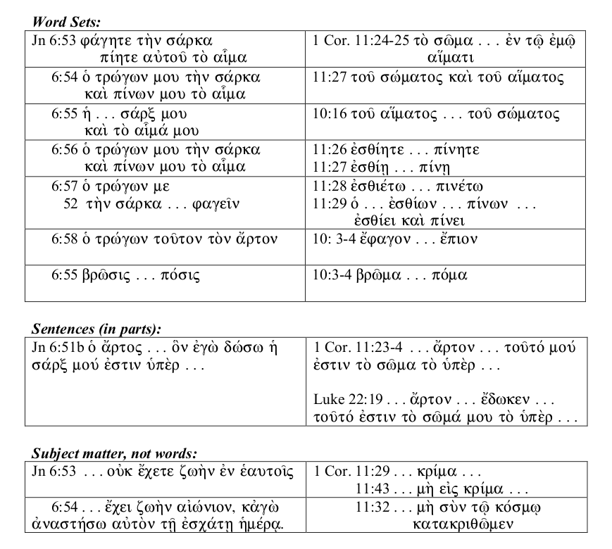
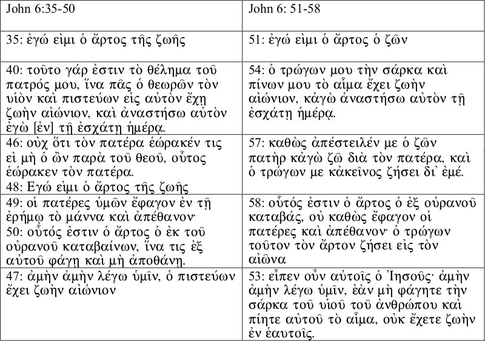
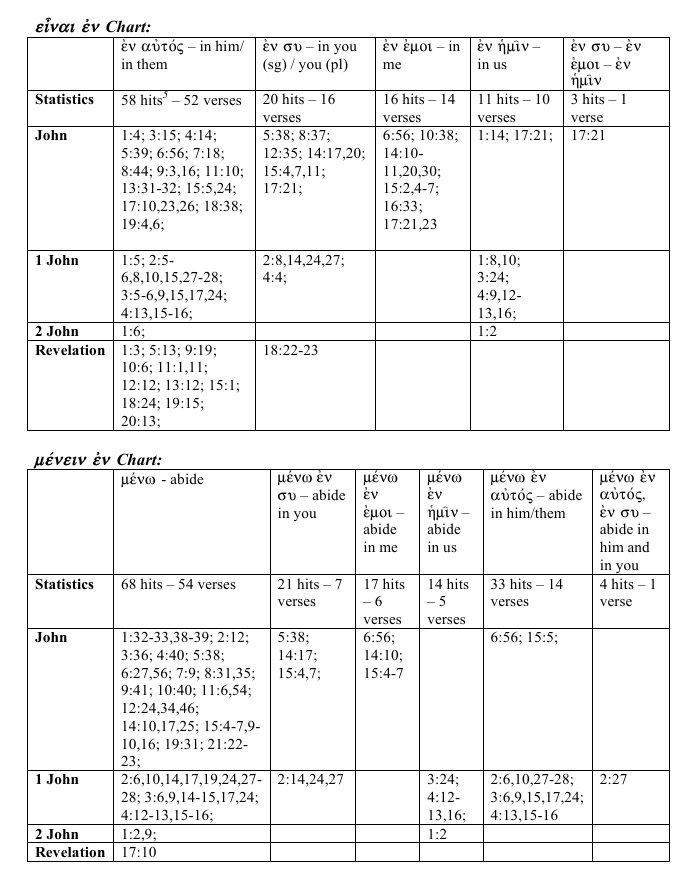
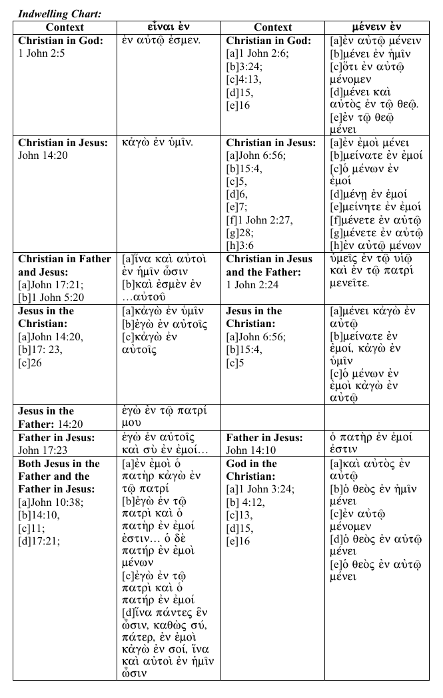
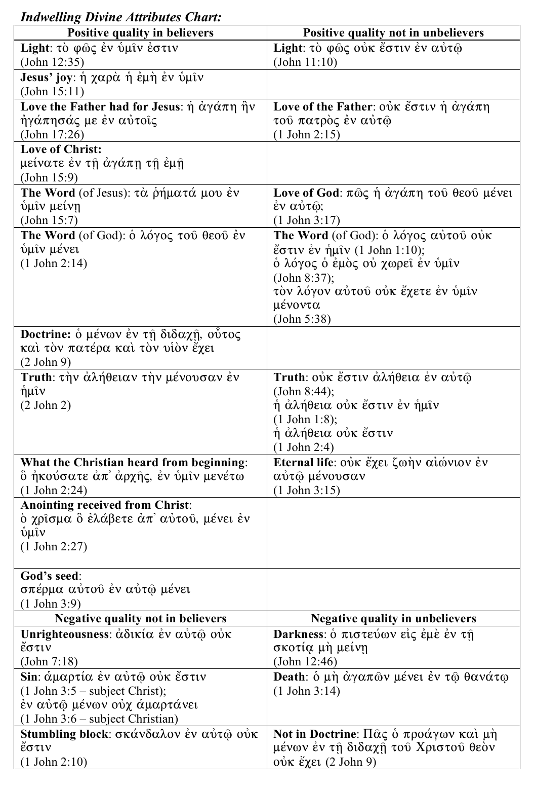
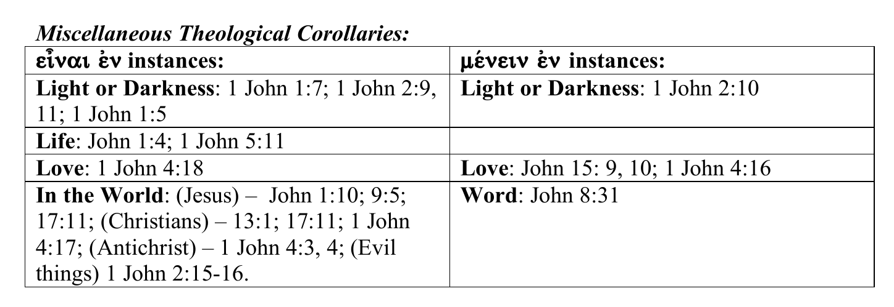

ABIDING IN CHRIST: A SACRAMENTAL READING OF JOHN 6:56 AND THE MYSTICAL THEOLOGY OF PAUL AND JOHN
Table of Contents
- DEDICATION
- ABSTRACT
- INTRODUCTION
- CHAPTER 1 ANALYSIS OF THE TEXT IN DETAIL
- CHAPTER 2 - JOHN 6: THE EXEGETICAL AND DOGMATIC DEBATE
- CHAPTER 3 - PAUL'S "IN CHRIST" PHRASEOLOGY AND THEOLOGY
- CHAPTER 4 - JOHANNINE AND PAULINE PHRASEOLOGY AND THEOLOGY: A COMPARISON AND CONTRAST
- CONCLUSION
- BIBLIOGRAPHY
- FOOTNOTES
A Thesis Presented to the Faculty of Concordia Lutheran Seminary, Edmonton, Department of Exegetical Theology in partial fulfillment of the requirements for the degree of Master of Divinity
By Jason R. Schultz
April 2006
Thesis Supervisors: Vernon Raaflaub, Steven Chambers, Edward Kettner
DEDICATION
To my sweet, beautiful, faithful and caring wife Regan, for all of her patience and understanding of the long hours in front of the computer during this project!
His steadfast love endures forever,
and His faithfulness to all generations.
Psalm 100:5
ABSTRACT
The purpose of this thesis is to explore John 6:56 exegetically. Throughout the history of the Church, there has been much debate about how to understand Jesus’ words “he who eats my flesh and drinks my blood abides in me and I in him.” Traditionally, Lutherans have not understood this passage and its surrounding context sacramentally, which seems oddly out of character and incongruent with the strongly grace centered sacramental theology of Confessional Lutheranism.
This thesis will explore the basic structure and exegesis of John 6:56 within the context of the Gospel itself and its location in the chapter. Additionally, the history of the interpretation of John from the early Church Fathers, the Middle Ages, the Reformation, and the current day understanding of the pericope will be investigated. This examination shall culminate with an exegetical case for a sacramental reading of John which is both truly Confessional and exegetically responsible to the text and ultimately strengthens Lutheran sacramental theology.
Included also in John 6:56 is John’s unique usage of the word “abide.” This is a very strong theme in John and is quite similar to the “in Christ” phraseology throughout the Pauline corpus. An investigation, as well as a comparison and contrast of John and Paul’s phraseology and theology, will be undertaken noting particularly the under-studied and neglected aspects of mystical or indwelling theology in both writers’ literature. This thesis concludes with the practical implications and necessity of this study for the continued proclamation for the Gospel of Jesus Christ in the church today.
INTRODUCTION
"Therefore whoever eats of this bread and drinks of this cup, firmly believing the words of Christ, dwells in Christ, and Christ in him, and has eternal life."1 These words are printed in the Service of Corporate Confession and Absolution and are spoken by faithful pastors to God’s church prior to receiving the sacrament of Holy Communion. These words invoke the very essence of what the Eucharist is truly about—the eternal gift of life and salvation given to poor, miserable sinners, freely by God’s grace in Christ.
However, as these words are spoken, read and inwardly digested, they cause one to wonder where in Holy Scripture do they come from? The chief verse that they paraphrase is John 6:56: “Whoever feeds on my flesh and drinks my blood abides in me, and I in him.” When these words are heard by Lutheran Christians, images of a communion rail, a chalice, and a paten may spring to mind. These words seem to be so intrinsically linked to the Lord’s Supper that it is hard to imagine any kind of interpretation that would illustrate otherwise. It is surprising—even shocking—to learn though that Confessional Lutheran theology has not heard these words in a sacramental manner.
In fact, the Lutheran position, standardized by Martin Luther himself, written in the Confessions and emphatically advocated by Frances Pieper’s Christian Dogmatics, has been adamant that these words do not and can not refer to the Lord’s Supper in any way. Instead, these bulwarks of Lutheran theology have advocated that the words from John 6 are to be interpreted as a “spiritual eating,” that is, a believing in Christ. It is precisely this intriguing position that has brought about this study.
Lutheran theology has always been quick to promote the Word and Sacraments as the ways in which God works in the world. Therefore, when the words of John 6 are heard, and seem to be so inherently sacramental in nature, it is peculiar to learn that Lutheran theology has advocated an anti-sacramental position – a position more in common with that of Reformed or Evangelical theology. Such inconsistency provokes an investigative curiosity to explore why and how Lutheran theology has arrived at its anti-sacramental position of John 6.
Closely connected to the sacramental question is John’s intriguing use of the word “abide.” Throughout his Gospel and epistles, John repeatedly utilizes this term to communicate what some scholars have called mystical theology. Additionally, St. Paul in his letters conveys a seemingly similar thought with his frequent “in Christ” phraseology. Both authors seem to refer to a mystical indwelling of Christ in His Christians and His faithful believers in Him. Yet, what exactly is this mystical indwelling, and is it in someway related to the sacraments of Baptism and the Eucharist? These concepts and more will be explored in the duration of this thesis.
This study examines the Gospel and epistles of John and the letters of Paul in an attempt to understand the authors’ writing styles and theology from a “synthesized” exegetical perspective. This approach has required not solely exegesis but also historical theology, systematic theology and finally practical theology, once again reinforcing that theology is not compartmentalized and disjointed, but rather is interconnected and forms a unified cohesive whole.
The first chapter investigates the Gospel of John, considering some of John’s important thematic language and structure. As well, an exegetical examination in detail of key words used in John 6:56 illustrates some of the interesting themes that John employs to communicate his theology. The second chapter delves into the Lutheran position on John 6. Beginning with the Church Fathers and advancing chronologically, the history of the interpretation of John 6 has been traced, culminating with Luther and his historic debate with Ulrich Zwingli at the Marburg Colloquy. Chapter 2 revisits John 6 exegetically and concludes with a case for a sacramental reading of John.
The third chapter makes the exegetical jump from John to Paul in noticing some interesting similarities in language and concepts between the two authors. What John communicated with his “abiding” language, Paul also seems to convey with his own distinct “in Christ” phraseology. Hence, the third chapter investigates the grammatical constructions that Paul employs to discuss the believer’s new life in Christ and the way life was outside of Christ. The fourth chapter jumps back to John to study further the key “abiding in” and “being in” language and theology of John’s Gospel and epistles. Also, Paul and John are compared and contrasted to investigate any similarities and differences that the two authors have, especially regarding the frequently under-discussed mystical theology of both writers. The final section of chapter 4 deals with the practical implications of this study for the Church today.
CHAPTER 1 ANALYSIS OF THE TEXT IN DETAIL
The Gospel of John
The literary characteristics and structure of the fourth Gospel make it a unique book in relation to the synoptic Gospels. John makes use of a highly individualized Greek style which utilizes a small vocabulary – but at the same time he makes extensive use of “programmatic” repetition. That is, he utilizes this repetition purposely towards a theological goal and interestingly, despite the much smaller vocabulary relative to the synoptic writers, the words John chooses for repetition are words that are used considerably less – even to the point of rarity – in the other Gospels.2
As C. K. Barrett also notes, as if examining the opposite side of a coin, there are also common synoptic expressions and theological concepts that are rarely seen throughout John’s Gospel.3 Such literary evidence as this may in fact be a contributing factor to the reason some scholars have suggested that John is a purposely different document when contrasted to the synoptic Gospels, perhaps even functioning as a supplement that seeks to bring to light other theological insights the synoptic authors left in the shadows.4
The intense theological emphasis of John has led some readers and commentators to question whether, in his quest for “layered” theology, the historicity and factual evidence of the Gospel has been set aside or at least in some way compromised. Leon Morris, in his commentary, deals with this question extensively and concludes that John is indeed a writer concerned with historical facts. “To lay it down that John has written theology, not history, can be countered by the simple device of affirming that John has written history but not theology. One dogmatic statement can be met by another. What is required here is evidence. And the evidence is that where he can be tested John proves to be remarkably accurate. The inference is that he is accurate also in other places."5
Another element interwoven with the factual historicity of John’s Gospel is the claim of some scholars that John had at least in part some interest in countering the docetic heresy. Docetism ultimately blazed the trail for the full fledged heresy of Gnosticism, but in its initial stages in the early Church Docetism considered the humanity and sufferings of the earthly Christ to be only illusion. It was Serapion the Bishop of Antioch (A.D. 190-203) who first coined the term from the Greek Δοκηταί which means “to seem.6”
There are several textual considerations in vocabulary and style that lend credence to this possibility. One fundamental point is the insistence of John to utilize the word flesh. Of the twenty-four occurrences of σὰρξ in the Gospels, thirteen are located in John7. Further, there seems to be intense theological significance in his usage and placement of this term. In John 1:14 after a lengthy prologue, John writes Καὶ ό λόγος σάρξ ἐγένετο. This is significant and indeed crucial to John’s Gospel because as F. F. Bruce points out, Gnostic writers (c. A.D. 140) had already been promoting a theology of the incarnation that enjoyed the ambiguity of σῶμα. However, the carnal implications and overall “unpalatable” flavor of σάρξ carried too much specifically graphic theological content8.
Continuing with the theological import of σάρξ for John is the distinct way that he uses it within chapter 6. It is interesting that John is the only Gospel writer who does not record the institution of the Lord’s Supper. Furthermore, where the event is recorded in the synoptics and in Paul, the distinct and exclusive usage of σῶμα is implemented. However, in light of the discussion above, it is illuminating to see why John may have purposely not used σῶμα in the only place where some argue he discusses the Lord’s Supper.
As the structure of the Gospel of John is examined, a number of scholars have arrived at remarkably similar conclusions. Agreement on a prologue from 1:1-18 seems to be a commonly accepted feature9. As the body of the Gospel develops, there is also general consensus that the first main section begins either with 1:1910 or 2:111 and extends until 12:50. Variation occurs amongst scholars regarding the labeling of the first main section. However, such titles as “Signs” and “Public Ministry of Jesus” have been utilized to summarize the content succinctly.
In the remainder of John’s Gospel there has been some disagreement regarding the placement of structural demarcation. The confusion has occurred as scholars have sought to subdivide the text in light of “farewell discourses,” the passion narrative, the resurrection and the epilogue or conclusion. Beasley-Murray’s simple structural assessment does an adequate and functional job of summarizing the remainder of the Gospel. The Passion and Resurrection narratives occupy 13:1-20:31 and finally, 21:1-25 contains the epilogue of the Gospel12.
John 6
John 6 is included in the first textual unit concerned with the signs and public discourses of Jesus13. As Morris notes, “John pursues his aim of showing that Jesus is ‘the Christ, the Son of God’ (20:31) chiefly in two ways: he narrates some of the signs that Jesus did and he records some of the discourses Jesus spoke.14” This assessment of John’s “programmatic” and illustrative theology makes good functional sense in that one can easily mark the progression of these events throughout the first major section of the Gospel. Chapter 6 is preceded structurally by the third sign, the healing of the lame man in 5:1-18, and followed by the third discourse—the Divine Son, located in 5:19-47. Directly after John 6 is the fifth discourse, concerning the life giving spirit, in 7:1-5215.
The Structure of John 6
Within John 6 are found two miraculous signs: the feeding of the multitude in 6:1-1516 and Jesus walking on the sea in 6:16-21.17 It should be noted that the miraculous feeding sign was deemed so important by the Gospel writers that it is recorded in each of the synoptic Gospels18 as well as in John. Immediately after these two signs comes, as Morris states, the fourth discourse—the bread of life—in 6:22-66.19
When analyzing the textual flow of the bread of life discourse, utilizing a synthesis of structures proposed by both Morris and Beasley-Murray is profitable. In 6:22-26 there is a search for Jesus by some of the “crowd,” which is followed by their demand of a sign from heaven by Jesus in 6:27-31. In 6:32-35, as Beasley-Murray notes, Jesus acts “in harmony with Jewish (midrash) exegetical method"20 and corrects the crowd’s mistaken understanding of the source of the manna from heaven—not Moses but rather the Father. Also in this brief section, Jesus introduces the first of His seven monumental ἐγω εἰμι sayings.21 In 6:36-40 is a demand by Jesus for faith on the part of His hearers, and following in 6:41-47 is a reiterated call to the grumbling Jews in the crowd. The next section, 6:48-51, is thematically linked to vv.32-35 and develops a very intentional Johannine theology of incarnation.
The section 6:52-59 is the climax of the bread of life discourse. It has also been a source of scholarly debate between those Christians who take this section to have an intended Sacramental meaning and those who do not. Yet, the original hearers had difficulty with Jesus’ words as well. In the following section, vv. 60-66, there is a defection of many of the disciples who had been following Jesus until this point because verse 60 presented them with a σκληρός λόγος- hard teaching—that they could not “listen to.” Finally, in the last section, vv. 67-71, the reader witnesses that many disciples have now left Jesus and the inner circle—the twelve—are also challenged in the same manner. However, in this final section, Peter makes his solid (and now liturgical) confession of allegiance to Christ, giving a fitting conclusion to Jesus’ Galilean ministry.22
John 6:56
John 6:56 is placed in the most critical section of the bread of life discourse. The majority of scholarly controversy surrounding it arises from this section. This may not be the most problematic verse in the pericope, especially when contrasted to the theological implications and meaning of 6:51-55. However, there are significant exegetical connections of interest and pertinent Johannine theological themes in 6:56, making it an excellent candidate for study.
John 6:56 Translation
ὁ τρώγων μου τὴν σάρκα καὶ πίνων μου τὸ αἷμα ἐν ἐμοὶ μένει κἀγὼ ἐν αὐτῷ.
“(The one) eating my flesh and drinking my blood abides in me and I in him.”
In the preceding verses, Jesus declares that He is the bread of life and elaborates on eating His flesh and drinking His blood. However, 6:56 serves as a functional statement to illustrate the connection between the eater and drinker to Himself. The grammatical structure of the verse is quite straightforward, though as Barrett notes, “there is no grammatical connection such as γάρ23 as found in 6:55 or even καθώς as seen in 6:57. A vocabularic connection exists between verse 54 and verse 56. However, in 6:54, there is a strong eschatological focus as Jesus says κἀγὼ ἀναστήσω αὐτὸν τῇ ἐσχάτῃ ἡμέρᾳ.
A consultation of English translations illustrates the straightforward nature of 6:56. The KJV reads, “He that eateth my flesh, and drinketh my blood, dwelleth in me, and I in him.” Grammatically, the several English versions of the Greek text—ASV, ESV, NIV, NKJV, NRSV—are identical.24 The only discrepancies or points of variation occur with the rendering of the key vocabulary words in the passage. The ESV is the only consulted English translation that renders the participle τρώγων “feeds” while the others choose the simpler “eats.” Here the ESV makes an effort to include the nuance that τρώγων delivers to the text over and above the simpler ἐσθίω. The other word that is found in variation is the verb μένει which the English translations render as either “dwell,” “abide,” or “remain.” Each option is semantically reasonable and adequately captures the lexical meaning.
Critical Apparatus Study: Textual Discrepancies
Although the English translations exercise divergence in their rendering of some of the vocabulary from the Greek text, it is interesting to note that in the same places in Nestle-Aland27 Novum Testamentum Graece there are not any textual variants. However, there is an intriguing variant at 6:56. The critical sign in the apparatus at this point indicates that an entire sentence has been inserted following verse 56. The variant reading adds καθως εν εμοι ο πατερ καγω εν τω πατρι αμην αμην λεγω υμιν, εαν μη λαβητε το σωμα τοθ υιου του ανθρωπου ως τον αρτον της ζωης, ουκ εχετε ζωην εν αυτω.25
As Barrett notes, the only source for the variant reading is Western text Codex Bezae D with “some old Latin support, notably a.”26 Included with the Latin source a is also the Latin source ff2, dating to the fifth century. However, the parentheses used to enclose both sources indicate that there are only minor differences between these two Latin sources and uncial D. Nevertheless, it is obvious from the length of the variant that it is not a simple accidental error by a scribe. Rather, this variant is an intentional change with the author’s primary emphasis being doctrinal modification.27 “It is not impossible that these words are genuine and were omitted from most MSS. by homoeoteleuton; but it is more probable that they are a homiletical Western addition, intended to make the Eucharistic reference more explicit.”28
Further insights suggesting that this discrepancy is an intentional variation created to ease the doctrinal difficulty of the passage are, firstly, that John habitually uses σάρξ throughout the bread of life section. However, this variant reading incorporates the term σῶμα. John uses σῶμα only five times in the entire Gospel.29 Further, in four of these places, σῶμα refers explicitly to Jesus’ physical body, the one exception being 19:31, where it refers to the bodies of those who had been crucified, including Jesus.
Significant Theological Vocabulary
There are a number of words in 6:56 that need special attention and investigation. The first is the participle τρώγων. Throughout John’s Gospel, the author uses both ἐσθίω and τρώγων. What is interesting contextually is that from the introduction of the first “I am” saying in 6:35, John has used only ἐσθίω within the bread of life discourse. As Robert Kysar notes, “In v. 53 phagomai is used, in v. 54 trogein. The latter word was used for the eating of animals and (according to some) the noisy, audible eating of humans. Hence, the new verb may mean ‘munching’ or ‘gnawing’—a still more scandalous way of expressing the theme.”30 George Beasley-Murray points out the same thing but notes also that it “is common to view the use of the term here as emphasizing a genuine eating of the flesh of Christ in the Lord’s Supper, in conscious opposition to the Docetists, who denied that such was possible.”31 This is clearly documented in the writings of Ignatius: “They [Docetists] abstain from Eucharist and prayer, because they do not confess that the Eucharist is the flesh of our Saviour Jesus Christ who suffered for our sins, which the Father raised up by his goodness.”32
Raymond Brown takes this variation as a vocabularic shift that introduces a theological shift along with it. The variation in the vocabulary introduces a contrast between the reception of Jesus through the word by faith, and a Eucharistic reception. Brown notes that “even though the verses in 51-58 are remarkably like those of 35-50, a new vocabulary runs through them: ‘eat,’ ‘feed,’ ‘drink,’ ‘flesh,’ ‘blood’.”33 There is a noted preference in John’s Gospel for τρώγων in contrast to the predominantly synoptic usage of ἐσθίω, and in context this may even be a way of introducing the eucharist by mode of expression.34
Significant in the Johannine Gospel, as has previously been noted, is the usage of σάρξ in contrast to σῶμα, as well as the possibility that it functions as a challenge to docetistic heresy. However, in conjunction with the eating of the flesh of Christ is the drinking of His blood. While verse 51 introduces three theologically controversial ideas about the bread from heaven,35 αἱμα is introduced into the discourse in verse 53. This insertion point comes immediately after verse 52, where Jesus’ Jewish hearers are already quarrelling amongst themselves. Morris notes:
Jesus does not retract one iota of his statement. He prefixes his reply with the solemn “I tell you the truth”. . . What he says is thus shown to be deliberate and important; he wants there to be no doubt about it. He adds to what he has said before. He has spoken about eating bread that is himself, and as giving his flesh. Now he speaks explicitly of eating his flesh, and he adds the drinking of his blood, an idea that would be especially abhorrent to Jews because they were forbidden to partake of blood.36
The language that Jesus employs here is so culturally and theologically perverse to His hearers that many of them grumble in disbelief, including the disciples. The concept of drinking blood, a practice that is specifically prohibited in the Torah,37 caused many to desert Jesus at the end of chapter 6.
Jesus’ Jewish hearers would have been solidly grounded in ritual and sacrificial understandings of blood based on the Old Testament scriptures. John Kleinig explores the concept of blood in ancient Israelite society and also in animistic cultural milieux. The belief that animals and people have “spirits” or souls may not prove to be a foreign idea to many readers. However, this spirit-life that exists in living things resides in their blood.38
Kleinig also notes that “blood was the only substance that was both material and spiritual.”39 Therefore in an ancient culture where the use of blood was rampant and an integral part of cultic worship and understanding, “no Israelite was allowed to consume the blood from any animal. Instead, God ordained that it was to be used ritually only in the rite of atonement and the practices associated with it. Yet the power of blood in that rite did not come from the life in it, but from God’s Word which had instituted its use.”40
Knowing that this Old Testament theological understanding of the use of blood would be in Jesus’ hearers hearts and minds, the command to drink his blood “scandalously might appear to violate the divine prohibition against drinking blood. Yet Christ’s institution does not really violate that taboo, because it is the ultimate reason for it. … In Jn 6:53-56 Jesus speaks to the Jews four times about the need for them to ‘drink’ his blood; that blood gives life, his own divine life, eternal life through the Holy Spirit (Jn 6:61-63).” Thus, in using this language which ultimately offends His initial hearers, Jesus is actually fulfilling the law and the prophets.41
The structure of John 6:56 utilizes a statement followed by a theologically illustrative purpose. The purpose or result for the one who eats Christ’s flesh and drinks His blood is ἐν ἐμοὶ μένει κἀγὼ ἐν αὐτῷ. ̇The word μένει is the third person singular active indicative of the verb μένω. Within the Gospel of John, μένω is an instance of John’s programmatic repetition to enforce an important theological theme. Statistically, μένω is used 52 times in the Gospels—and 40 of these instances are located in John’s Gospel.42
The lexical meaning of me÷nw at its most basic level is “to remain” or “to abide.”43 In the Septuagint, μένω is commonly employed to translate דמע (“to stand,” “to last”) and also קוּם (“to be lasting”).44 Common to both Old and New Testament usage is the theological overtone of the immutability of God—that is, his unchanging essence and attributes—and how this aspect must be considered because within John’s Gospel this theology is so prevalent.
John uses μένω “to denote an inward, enduring personal communion. So of God in his relation to Christ: ὁ πατήρ ἐν ἐμοὶ μένων, the Father, who abides in me (J 14:10). Of the Christians in their relation to Christ J 6:56; 15: 4a, c, 5-7; 1 J 2:6, 24c. Of Christ in his relation to the Christians J 15: 4ac, 5-7.”45 The relationship that is referred to in John 6:56 is without a doubt mysterious in nature, focusing on the connection between God and Christ and His Christians.46
Scholars have written much in commentaries on John’s Gospel attempting to capture the meaning of Jesus’ words in 6:56. Morris describes “the close connection between fellowship with Christ and the activity of eating the flesh and drinking the blood … since Jesus gives what is almost a definition of eating his flesh and drinking his blood.”47 It is in this close connection that “the eater is in Christ and Christ is in the eater.”48
Such a theological concept is not absent elsewhere in Scripture. Some have attempted to draw an Old Testament parallel between this Johannine indwelling and abiding to Yahweh dwelling in the Temple or even the Tabernacle. However, a better Old Testament illustration may be the manner in which God’s Word and Spirit dwell within a prophet.49 In the New Testament, the relationship between Christians is modelled after the perichoresis50 that exists between the first and second persons of the Trinity, as is written in John 17:21, although without fusion, merging together, or becoming the other, as mystics often suggested.51
Some scholars have suggested that a definite New Testament parallel exists between the Johannine concept of abiding and the Pauline concept of being “in Christ.”52 Bruce states that “Paul expresses the same mutuality of indwelling, without using this verb μένω, when he uses such phrases as ‘in Christ’ and ‘Christ in me.’”53 Beasley-Murray connects John and Paul together when he states that the “eating and drinking of Christ’s flesh and blood result in mutual ‘abiding’ of the believer and Christ. This is very close to the Pauline conception of κοινωνία (cf. Gal 2:19-20), and indicates a personal relationship of faith.”54 The nature of this connection will be more fully discussed in chapter 3.
In addition to the verb μένω, the prepositions surrounding it are also of major importance. Verse 56 says ἐν ἐμοὶ μένει κἀγὼ ἐν αὐτῷ. The exegetical significance of ἐν is great because it is the most frequently used preposition in Koine Greek and also occurs in the most varied situations.55 The syntax here in 6:56 suggests that ἐν carries the spatial/spherical nuance. This is closely related to, but not to be confused with, the temporal or “time within which” usage of ἑν.56 As the eater and drinker abides in Christ and Christ in him, there is a spatial or spherical relationship that occurs in time but also supercedes time, as the present tense of me÷nei suggests. It is a theological mystery how such a relationship takes place, but few scholars would argue that such a relationship can take place outside the sphere of faith.
There are other instances in John’s Gospel where this Greek grammatical construction of ἐν + ἐμοί57 + μένω occur in striking similarity. Chapter 14:10 shares the same syntax, with the exception that μένω occurs in the present active participial form μένων. In this instance, scholars agree that the “reciprocal immanence” that John has written here illustrates the Johannine theology of unity that exists between Jesus, the second person of the Holy Trinity, and the first person, the Father.58 In this instance, μένων is used to show that the works and words of Jesus are done by the Father acting through Him.
The other major section where a similar construction exists in John’s Gospel is in chapter 15. It is in this chapter that John introduces his final “I am” statement—“I am the true vine.” Interestingly, it “is the only one to which an additional predicate is conjoined (‘and my Father is the Vinedresser’).”59 Even in this final “I am” discourse, John has as his focus the relationship that exists within the Trinity and, arguably, also the relationship that exists between the Trinity and humanity.
In chapter 15, the first instance of the construction in question appears in verse 4. Worthy of note, however, is that the very first word and very first instance of μένω is μείνατε, which is a second person plural aorist active imperative form. It must be noted that scholars have debated the significance of the aorist tense and have reached conclusions congruent with their own dogmatic systems, particularly regarding how this relationship between Christ and the believer comes about.60 It is evident though from the aorist tense that this abiding relationship came into existence when the disciple came to faith. When Jesus exhorts the disciples, μείνατε ἐν ἐμοί, κἀγὼ ἐν ὑμῖν, He emphasizes that this divine relationship has its source and support in Him.61
Further, the other two instances in 15:4 of μένω with the preposition ἐν occur in the subjunctive mood. Congruent to the usage of the subjunctive, the final two instances of μένω in 15:4 are found within a conditional statement. This instance is a third class conditional sentence utilizing the typical ἐάν plus the verb in the subjunctive, and is similar in syntax to 15:6 and 15:7. In all of these conditional constructions, John reveals more about the abiding-in-Christ relationship. He builds from his programmatic statement of 15:1 (reaffirmed in 15:5) that as Christ does nothing apart from the Father, Christians do nothing apart from Christ. Therefore, the condition that the believer is in with Christ is a “mutual indwelling, and this is the condition of fruitfulness. Those who so abide in Christ and have Christ abiding in them keep on bearing fruit in quantity.”62
The conceptual parallels that exist between John chapters 6, 14, and 15 are very strong. There are other instances in John’s Gospel where he expounds on his “abiding” theme, further fleshing out the theological realities of the relationship. Such examples include 1:32-33, where John states that the Holy Spirit descended and “remained” upon Christ. Also, 3:36 states that the wrath of God “remains” on those who do not believe in the Son. Further, in 5:38 John writes that the word of God does not “abide” in those who do not believe the one He sent (Christ); and 8:31 maintains that the “abiding” is the test of a true disciple. This is by no means an exhaustive list, but is adequate to bring to light how important the theme of abiding in Christ, and Christ in the believer, is in John’s Gospel.
Without doubt, John’s Christology is highly developed in his Gospel as is his careful attention to the thematic and theological reality of Christ abiding in His Christians and they in Him. The question remains, what exactly is the nature of this “abiding” relationship? Does the mystical union come into play between Christ and the believer? And if so, is there as part of this relationship a sacramental connection? Beasley-Murray notes an interesting possibility in the imagery of the Vine discourse of chapter 15:
[One] recalls the words of the Institution regarding “the fruit of the vine,” which Jesus gave his disciples but which he would not again drink (Mark 14:25). … The very idea that the parable originated earlier than the Last Supper suggests that the link with the Lord’s Supper is at best secondary, not primary, but its transfer to the Last Supper and its affinity of thought with the latter suggests that the Evangelist’s successor and his churches saw the inner connection to the parable and the Eucharist.63
If such a sacramental connection is indeed possible in chapter 15 in the minds of the readers of John’s Gospel, then it would also logically follow that the same kind of connection can be made in chapter 6, a section that is perhaps even more specific in its “flesh and blood” Eucharistic imagery than the “secondary” link from chapter 15.
If a case can be made for sacramental, Eucharistic imagery that concurrently supports the abiding/remaining theme of Johannine theology, it can be made strongest from John 6:56 specifically, and more generally from the bread of life discourse in chapter 6. However, Christian scholars from the earliest Church Fathers to the Reformers and even to the most current commentators have disagreed on the sacramental nature of John 6.64 Ultimately, scholars will interpret sacramental potentiality within their own dogmatic systems. However, as it pertains to John 6, Confessional Lutheran exegetes and dogmaticians—individuals who arguably have a very high understanding and positive appreciation of the sacraments—have consistently interpreted John 6 non-sacramentally.
One would expect to find a dismissal of sacramental interpretation amongst scholars whose theological systems deny the presence and mystery of sacraments and favor symbolic representation.65 However, it is certainly intriguing that Lutheran scholars have also followed suit on their exegesis of John 6! Even Luther himself denied that John 6 could possibly be intended sacramentally, instead positing that Christ was “speaking of his spiritual flesh and of spiritual eating.”66 How can the words of Christ in John 6:55, “my flesh is ἀληθής (true) food and my blood is ἀληθής (true) drink,” be understood to have an intended spiritual meaning? This is the heart of the exegetical and dogmatic question for Lutheran scholars, and will be examined at length in chapter 2.
CHAPTER 2 - JOHN 6: THE EXEGETICAL AND DOGMATIC DEBATE
The exegetical and dogmatic debate about the meaning of John 6 has spilled much ink as scholars have tried to discern if indeed John 6 should be interpreted sacramentally. The difference of opinion can easily be seen through history. From the earliest writings of the Church Fathers, through to the Middle Ages, the Reformation and even until the present, the opinions of scholars have ranged greatly on how to read John 6.
The most significant and formative period in history for the Lutheran interpretation took place amid the controversy between Luther and Zwingli in 1527-1528. The outcome of the historic Marburg Colloquy is what solidified the Lutheran position that John 6 was definitely not to be understood in a sacramental way. Since that point, most Lutheran dogmaticians have also agreed with the historic Lutheran stance and confessed that John 6 is not sacramental in any way whatsoever. Yet, some scholars, as we shall see, have disagreed.
The Church Fathers
Perhaps one of the earliest documents regarding the understanding of John 6 comes from Ignatius (died A.D. 107). In his letter to the Smyrnaeans, Ignatius writes against the Docetists about the real presence of the flesh of Christ in the sacrament. “[T]hey [heretics] do not confess that the Eucharist is the flesh of our Saviour Jesus Christ who suffered for our sins, which the Father raised up by his goodness.”67 In another of his letters, he states that the flesh of Christ in the Eucharist “is the medicine of immortality, the antidote that we should not die, but live for ever in Jesus Christ.”68
While there seems to be a favoring of a sacramental reading with Ignatius, the opposite is true of Origen (died 254) and Eusebius. According to Craig Koester, their interpretations “relied on a second factor: literary context. They concluded, in light of 6:63, that Jesus’ ‘words and discourses themselves are the flesh and blood by which whoever partakes in them is fed as though on heavenly bread and will receive a share in the heavenly life.’ The concern for theological plausibility and use of the literary context became standard features in non-sacramental interpretations of the text.”69
A sacramental understanding returned in the work of Cyril of Alexandria (died 444). “Cyril interpreted the metaphor first by noting that the wording of 6:53-58 resembled the words of institution (Matt 26:26,29), concluding that Jesus’ statements in John 6 would make sense if they referred to the sacramental meal of the church. Second, Cyril had to address a theological problem, namely, that a sacramental understanding of the text could suggest that partaking in the Lord’s Supper immediately guaranteed everlasting life.”70 In concert with Cyril’s view, albeit earlier than Cyril, was John Chrysostom (died 407).
Chrysostom allowed the liturgy of the church to be the lens for his exegetical scope. He incorporated John 6:53-58 by using the words of institution to elevate the sacramental nature of the John passages. He proclaimed to his hearers, “He [Christ] hath given to those who desire Him not only to see Him, but even to touch, and eat Him, and fix their teeth in His flesh, and to embrace Him, and satisfy all their love. Let us then return from that table like lions breathing fire, having become terrible to the devil.”71
Augustine too had much to say about John 6. However, he was much more like a swinging pendulum in his interpretation of the chapter. As Koester explains it:
Augustine identified the eating and drinking with participation in the church as the body of Christ, but for theological reasons he did not relate John 6 directly to the Lord’s Supper. John 6:54 promised that those who eat Christ’s flesh and drink his blood would have eternal life, yet the apostle Paul warned that some who eat of the Lord’s Supper do so to their own judgment and even death ( 1 Cor. 11:27-30). Therefore, Augustine maintained that John 6:53-58 spoke of a spiritual reality (res) which could be represented by the sacrament, but not equated with the sacrament; … The emphasis shifted in his anti-Pelagian writings, however. There Augustine argued that infants were sinful and therefore should be offered both baptism and the Lord’s Supper, citing John 6:53 to support his point. Therefore, later interpreters would claim Augustine as a precedent for both sacramental and non-sacramental interpretations of John 6.72
Depending on Augustine’s purpose for writing, his interpretation of the chapter could change quite dogmatically.
The Middle Ages
Building on the exegesis and interpretation of the Fathers, the scholars of the Middle Ages placed more emphasis on a spiritual understanding. The reason for this approach was more practical than exegetical or dogmatic. Thomas Aquinas (died 1274) interpreted the text similarly to the way that Augustine did, particularly inclining towards the non-sacramental camp. Aquinas realized that if the passage was interpreted as a “spiritual eating, it does not cause any difficulty. For that person eats the flesh of Christ and drinks his blood in a spiritual way who shares in the unity of the church.”73
For Aquinas, there were several considerations that posed theological and practical barriers to a sacramental interpretation. The first was the absolute necessity that verse 53 gives to the sacrament. The problem that this posed was clear in the case of infants, the insane, or others who could not heed and apply St. Paul’s warning about receiving the Eucharist worthily (1 Cor 11:27-30). Also, another dilemma that arose from the sacramental interpretation was that John said that one should commune in both kinds, and at the time the church was not serving the cup to the laity for practical reasons such as spilling. Partly to address this concern, Rome maintained that the entire Christ (both body and blood) is simultaneously contained in the bread. Further, the promise of eternal life and abiding in Christ cannot simply be a mer ely automatic function of the sacrament; there must be a spiritual emphasis instead. Therefore, Aquinas understood John 6 first and most importantly in the realm of faith and love with, at best, possible sacramental undertones.74
Approximately 70 years later, the interpretation of John 6 came full circle back to a sacramental understanding. Nicholas of Lyra (died 1340) returned to an emphatically sacramental interpretation which forcefully indicated the real presence of Christ’s flesh in the Eucharist. However, the history of interpretation again transitioned back to a sacramentally void interpretation with greater emphasis being placed on the distribution of the elements, than on the scriptural witness concerning their nature. Desiderius Erasmus (died 1536) continued to champion the spiritual eating and drinking interpretation, saying that the flesh and blood Christ spoke of was His doctrine. These were the prevailing theological and philosophical trends informing further debate on the interpretation of this passage by the Reformers.75
The Reformation
A significant amount of change occurred during the Reformation, the aftershock of which is still being felt in the Church today, some five hundred years later. The Reformation’s impact was not only sociological but also, and arguably more importantly, theological. The Western Church shifted away from Rome in doctrine, practice and authority—for better or for worse. The implications of Luther’s exegetical and pastoral writings have influenced the interpretation of the Scriptures since his time. One such contribution in particular is his emphasis on sacramental theology.
Luther’s own theological development advanced as he sought to address a multitude of questions about the sacrament of the altar. By and large these problems were pastoral and practical, such as the use of Latin in the mass and the elevation of the bread. But despite these concerns and the rift from Rome, there “was never a time in Luther’s life when he did not believe the Real Presence of the true body and blood of Christ in the sacrament.”76 This belief is fundamentally important for Lutheran theology as it understands the sacraments.
Luther’s conviction that Christ is truly present in the bread and wine of the Lord’s Supper played a key role in the sacramental debates that Luther had with Rome and with other Reformers. The contention with Rome was not a debate over the Real Presence of Christ, but rather focused on the distinction between Transubstantiation, which Lutherans correctly understand to be “an unnecessary philosophical theory to explain the miracle of the Real Presence, which defies such explanation,”77 and what some theologians have called the “Lutheran” understanding of Consubstantiation.78 According to Normal Nagel, an “apostolic and catholic doctrine of the presence of Christ’s body and blood Luther never questioned, although he admits that he once thought of the practical advantage of making a common front against the pope with those who, as something of a novelty in Christian tradition, denied the presence of Christ’s body and blood.”79
The reality of the issue was that Luther was not interested in formulating a philosophical theory to attempt to figure out the mystery of Christ’s presence. To Luther, “the consecrated bread is the body, the consecrated wine is the blood of Christ”80 as it is written plainly in Holy Scripture. However, the “light” sacramental disputes with Rome would give way to much “darker” debates with the other Protestant Reformers of Luther’s day. The most fundamental debate concerning the sacrament of the altar took place between Luther and Ulrich Zwingli, the Swiss Reformer. It was in his debates with Zwingli that the Lutheran non-sacramental interpretation of John 6 was formulated and solidified.
Luther and Zwingli
Luther and Zwingli were cut from totally different theological cloth, so to speak. Their dissimilarity in education and religious background played a fundamental part in the way the two men approached their theological debates. Luther was a member of a monastic order, a Doctor of Divinity specializing in exegesis. He understood the God of the Bible to be a hidden God (Deus absconditus) apart from what had been revealed in the person of Jesus Christ. This idea of a “hidden God” becomes especially important for Luther’s understanding of the Sacrament of the Eucharist, where Christ is indeed the “most hidden.”81
Zwingli never studied in a theological school, even though he took holy orders after the completion of his Master of Arts degree. This education gave him insights into the philosophy and theology of Thomas Aquinas—a person “for whom revelation never can contradict reason.”82 Another portion of Zwingli’s educational formation came from the humanist camp of Erasmus. From him “Zwingli learned the idealist separation of matter and mind, body and soul, the spiritual understanding of Christianity and Christian salvation.”83 This formation paved the way for the divergence between Luther and Zwingli in their understanding of sacraments.
Zwingli’s position was up until 1524 a quasi-catholic view of the sacraments. The humanist education he received from Erasmus leaned toward a more spiritual emphasis, and when Dutch humanist Cornelius Honius constructed the argument that “Christ can be seen only by faith and not, like the host, by human eyes”84 Zwingli wholeheartedly accepted it. It was at this point that the sacramental understanding of the Christ’s true presence in the Eucharist was swept away and replaced with a figurative or symbolic understanding.
Ultimately, for Zwingli, reason held the place of Lord over Scripture. “It is impossible, Zwingli affirmed, for this body to be in more than one place.”85 The real body of Christ was in heaven, not in the bread of the sacrament:
The sacramental union of the visible earthly elements with the very body and blood of Christ was unacceptable to Zwingli because a natural body could not be in two places at once, and Christ had ascended into heaven; the finite could not contain the infinite, Zwingli insisted. The concept of oral communion was rejected because Zwingli thought that an earthly substance could not convey a spiritual gift; eating the body of Christ could only be done spiritually, that is, by faith.86
It was after his non-sacramental affirmation of the Lord’s Supper was established that Zwingli began to further interpret the Scriptures that appeared to prove his view. In particular, John 6 was his gem passage, his “diamond,” as he called it: “It is the Spirit who gives life; the flesh is of no avail. The words that I have spoken to you are spirit and life” (John 6:63 ESV).87
It was Zwingli’s “diamond” passage that lead him to understand the role of the Spirit and the flesh in interpreting John 6.
Like Luther, Ulrich Zwingli (d. 1531) interpreted eating and drinking in terms of the repeated references to faith earlier in the discourse, and pointed out that 6:56 could not refer to sacramental eating since not all who receive the sacrament abide in Christ. But Zwingli differed sharply with Luther over the import of 6:63, “the flesh profits nothing.” Luther insisted that “the flesh” meant human carnality as opposed to the spirit of God, and that the text had nothing to do with the sacrament. Zwingli, however, argued that “the flesh” in 6:63 referred to Christ’s flesh, as in 6:51-56. He took 6:63 as the interpretive key to the words of institution, insisting that it removed any reason to think that Christ was physically present in the sacrament.88
For Luther, the Holy Spirit is always connected to the external Word or means, but not so for Zwingli. Regardless of “his Augustinian Biblicism, [he] recognizes something as higher than the letter of the Bible. Here a strong contrast between Luther’s and Zwingli’s understanding of the Word becomes evident. For Luther the content of the Word is bound up with the letter.”89 And indeed, because Zwingli utilized the John 6 passages to further his non-sacramental view, a position that Luther vehemently rejected. Luther would not and could not use John 6 to make a case for the Real Presence of Christ in the sacrament.90 Instead “Luther has to return home to the Verba. To them every notion and category of ours must be brought into subjection.”91
Luther on John 6
The enigma of Luther is that he is an extremely sacramental theologian. He opposes Zwingli’s anti-sacramental paradigm and makes the case for the Real Presence of Christ. However, he does so by using only the Verba, that is, the words of institution found in the Synoptic Gospels and the Apostle Paul.92 Therefore the enigma lies in how Luther contends with John 6.
Interestingly, Luther has agreement with Zwingli on the meaning of the John passages. “In his sermon on John 6:49 Luther writes: ‘So, then, there begins a murmuring, and they ask: “How can we eat Thy flesh?” But this is the explanation, namely, that He speaks of the spiritual flesh, that is of spiritual eating. It is faith that eats Him, just as He Himself explains this when He says: “He that believeth on Me hath everlasting life” (v.47), that is, such a one eats rightly, for “I am the Bread of life.”’”93
Throughout Luther’s career he continued to view John 6 in a non-sacramental light.
Luther’s insistence that the eating and drinking of John 6 simply meant believing appeared as early as his “Lectures on Hebrews” of 1517-18, and he developed his arguments more fully in the “Babylonian Captivity” of 1520 and his sermons on John 6 in 1531. First he argued that a reference to the Lord’s Supper would be inappropriate at this point in Jesus’ ministry, since the sacrament had not yet been instituted. Second, and more importantly, taking the reference to eating and drinking as a way of describing faith would be thoroughly consistent with the rest of the discourse, which began with a statement about faith as God’s work (6:27) and concluded by contrasting carnal eating with spiritual eating (6:63). Third, he reiterated the theological problems created by a sacramental reading of the text. Like Augustine and Aquinas, he pointed out that the text promises life to those who eat and drink, which is true of faith, but not of the mere reception of the sacrament.94
Further, in “his “Sixteenth Sermon” on John 6:53-54, delivered on April 1, 1531, Luther writes: “Wherever, then, the Lord Christ is being preached that He has given His body into death for our sins and has shed His blood for us, and I heed it, firmly believe it, and cling to it, that it means to eat and drink His body and blood. To eat here means to believe. Whoever believes, he eats and also drinks Christ.”95
For Luther, the key problem with John 6 is that it “does not fit” with the other passages in Scripture where the Lord’s Supper is discussed or instituted. “There is in John 6:51-58 no institutional command: ‘This do in remembrance of Me,’ as, for instance, in Luke 22:19 and other passages. Nor do we read anywhere in the New Testament that the Lord’s Supper was celebrated immediately after the Capernaum discourse had been addressed to the Jews.”96
Building his case further, Luther writes:
It is true that in John 6 Christ does not speak of the Lord’s Supper. Nor does He do anything with His hands. He also does not impart any bread or wine to His disciples, as He does in the Lord’s Supper, but He preaches indiscriminately both to His disciples and the non-believers at Capernaum faith in Himself, which faith holds that He is true man with flesh and blood and that He gave them both for us (in death). This properly means to eat His body spiritually and to drink His blood spiritually. And He calls Himself the spiritual bread, which gives life to the world.97
These views brought forth by Luther were the theological background to the Marburg Colloquy where he would meet Zwingli for a debate about the sacrament, in which is revealed the unique role of the interpretation of John 6.
The Marburg Colloquy
The historical context for the Marburg Colloquy was Phillip of Hesse’s request to unify the Lutheran and Zwinglian camps. Luther composed fifteen articles (the Marburg Articles), based closely on the Schwabach Articles, which were to be debated. Surprisingly, Luther and Zwingli agreed on all of the articles except one, the Lord’s Supper.
In the first session of the Colloquy, Luther and Oecolampadius debated about the Eucharist. Oecolampadius maintained that only a spiritual eating was necessary whilst Luther maintained both a spiritual eating (his interpretation of John 6) and also an effective, necessary and commanded sacramental eating, that is as found in the plain words of institution.98 However, Oecolampadius continued to bring up John 6 as the “irrefutable proof” that sacramental eating is unnecessary. He told Luther: “we should deal with Scripture in a clear way and compare passage with passage. That is what Augustine does. Thus I maintain that the spiritual eating is sufficient.”99
Zwingli joined the debate with Luther precisely where Oecolampadius left off, charging that Luther’s interpretation of the sacrament was inconsistent. How was it possible that Luther would so vehemently cling to a sacramental understanding of Scripture but not use John 6 as part of his argument? The answer was that Zwingli saw the clear teaching of John 6 to lead away from bodily eating. The challenges that Zwingli brought to Luther were always connected to his “gem” of John 6:63 which seemed to cast doubt on the entirety of sacramental theology.
Luther’s continual retort in the Colloquy was to return to the Verba and base his argument solely on the clear words and command of Christ. “‘Do this’ (Luke 22:19)—this word causes the hand of the priest to become the hand of Christ. … The real body is present by virtue of the word of Christ.”100 As the volley went back and forth and each side asked the other to yield on the issue, Zwingli continued to return to John 6. “I am still holding that word in John 6 where the eating and drinking of the body is clearly interpreted, which you are dealing with so lightly. You will have to change your tune.”101
However, Luther would not relent, as Sasse relates:
Luther: You speak contemptuously. Zwingli: Do you not believe that Christ wanted to help the ignorant when, in John 6, He commanded the spiritual eating and repudiated the carnal eating? Luther: By speaking with audacity you want to win your case. “This is a hard saying,” the Jews say, John 6:60, speaking of a carnal eating, which would be impossible and absurd. The obligation to prove rests on you, not on me. But we will let that text in John 6 go, since it has no bearing on the understanding of the words of the Lord’s Supper.102
This was the way the debate ended in the first session of the Colloquy, with the exception of the ad hominem attacks both Reformers leveled against each other. However, the debate about John 6 was not over.
In the second session of the colloquy, which occurred the following day, Zwingli again advanced his argument based on John 6. However, after this initial barrage of passages from the chapter were quoted, the argument took a distinct turn. Essentially, there was discussion about the local and illocal presence of Christ, with Zwingli and Oecolampadius advocating and arguing for the local presence of Christ in heaven—not in the body and blood of Holy Communion. Nevertheless, throughout the remainder of the Colloquy, Luther continued to bring up the Verba and argue his point for the Real Presence on that basis alone—even to such an extent that at one point in the argument, he lifted up the tablecloth to read the passage that he had written on the table with chalk: “Hoc est corpus meum.”103
Thus, the Colloquy came to an end and did not accomplish the true unity that it sought. “The lack of a real result was at first hidden by the Marburg Articles, which were understood by each side in a different way. For Luther and the Lutherans they were the beginning of a real union, a theological document which proved that Zwingli was able to yield in important matters, and thus justified the hope that he would eventually accept that last point on which agreement had not been reached.”104
However, even though true consensus about the Lord’s Supper was not reached between the Lutheran and Zwinglian camps, one thing had certainly been accomplished by the Lutherans—a consensus that John 6 was not to be read whatsoever in a sacramental way. The Verba alone were the only place to find true Eucharistic theology in the scriptures. This interpretation has remained consistently among many Lutheran scholars and within many Confessional writings.
The Current Lutheran Position on John 6
The precedent that the Marburg Colloquy set has had lasting effects for the Lutheran Church from the Reformation until the present. Of import especially is how the Confessions of the Lutheran Church have handled the problem that a non-sacramental view of John 6 presents. For instance:
So there is a twofold eating of Christ’s flesh. First, there is a spiritual kind of eating, which Christ treats above all in John 6[:35-38]. This occurs in no other way than with the Spirit and faith in the proclamation of and meditation on the gospel, as well as in the Supper. It is in and of itself useful, salutary, and necessary for all Christians at all times for their salvation. Without this spiritual reception even the sacramental or oral eating in the Supper is not only salutary but also harmful and damning. This spiritual eating, however, is nothing other than faith—namely, hearkening to, accepting with faith, and applying to ourselves God’s Word, which presents Christ to us as true God and a true human being along with all his benefits (God’s grace, forgiveness of sins, righteousness, and eternal life). These he won for us with his flesh, which he gave into death for us, and with his blood, which he poured out for us. Moreover, this faith means relying firmly upon this comfort (that we have a gracious God and eternal salvation for the sake of the Lord Jesus Christ) with unshakable assurance and trust, holding onto this assurance in every difficulty and tribulation.105
In the Formula, the only passages cited in support of this “two fold eating” are from the John 6 account.
Additionally, Pieper, in his Christian Dogmatics, echoes the aftermath of the Colloquy when he states that the Reformed use the passages of the John 6 account (namely 6:63) to determine the theology of the Lord’s Supper. However, this view is condemned by Pieper when he writes: “Since John 6, however, does not pertain to the Lord’s Supper at all, as perhaps most of the Reformed grant, the use of this passage to determine the doctrine of the Lord’s Supper is actually an admission that the teaching so arrived at is not the doctrine of Scripture, but the product of human ingenuity.”106
Pieper continues his case against John 6 in light of the controversy it has had on the theology of the Lord’s Supper with the following commentary:
Text and context make it utterly impossible to refer John 6 to the Lord’s Supper. The entire apparatus of the Lord’s Supper, so faithfully described by all four writers, Matthew, Mark, Luke, and Paul, in their report on the Sacrament, is here missing. In John 6 Christ does not take bread, give thanks, break it and give it to the people, and say: “Take, eat; this is My body, which is given for you.” Just as little as does John 6 mention a cup which Christ takes, gives thanks over, gives to the people, and says: “Drink ye all of it; this is My blood of the new testament, which is shed for many for the remission of sins.” The reason, however, why Christ speaks with such emphasis of the eating of His body and the drinking of His blood in John 6 is evident from the context. Christ had fed the populace, the five thousand, with five barley loaves and two fishes. Such a Messiah attracted the Jews. They desired to make Him king. And when He withdraws from them, they follow Him to the western shore of the Sea of Galilee. They are seeking earthly bread from Christ. Christ reproves them: “Verily, verily, I say unto you, Ye seek Me, not because ye saw the miracles, but because ye did eat of the loaves and were filled.” He urges them to seek “that meat which endureth unto everlasting life.” Then He very definitely declares Himself to be the Bread “which cometh down from heaven and giveth life unto the world.” And faith in Him (“that ye believe on Him who He hath sent”) He designates as the thing God would have all men do above all. This faith in His Person Christ then pictures as eating and drinking: “He that cometh to Me shall never hunger; and he that believeth on Me shall never thirst.” … Christ climaxes His statement saying: “Except ye eat the flesh of the Son of Man and drink His blood, ye have no life in you.” Thus He impresses on the mind of the Jews, and us all, the very necessary truth that He is the Savior of the Jews and the world, not by the gift of perishable food and temporal gifts in general, but by His suffering and dying to wipe out the guilt of mankind. John 6 belongs to the most impressive passages of Scripture teaching faith in Christ’s satisfactio vicara as necessary for salvation107
The other kind of eating of Christ’s body that the confessions talk about is the “oral or sacramental, when all who eat and drink the consecrated bread and wine in the Supper receive and partake of the true, essential body and blood of Christ orally.”108 However, the problematic aspect of the confessional deduction, as well as Pieper’s conclusion, is that they are simply revisiting and adopting Luther’s position on John 6 which was a reaction to the Zwinglian perspective and insistence that John 6:63 was speaking of Christ’s flesh. What the Confessors and Pieper seem to forget is that Luther was happy to “let that text in John 6 go”109 simply to crush Zwingli’s “diamond” argument.
However, Luther’s perhaps too hasty abandonment of the sacramental strength of John 6 has had problematic effects. An example is the questioning of the congruency of sacramental theology in Holy Scripture. Linked to this, the sedes doctrinae of the Lutheran understanding of the Lord’s Supper would be strengthened by a consistently sacramental reading of John. Revisiting the text of John 6 will hopefully provide some fresh theological insights for the study of the Lord’s Supper in John’s Gospel, as well as additional considerations for Lutheran sacramental theology.
Evidence for a Sacramental Reading of John 6
As was stated at the onset of this chapter, there have been some Lutheran scholars who have been persuaded to go “against the grain” of what has come to be the “standard” Lutheran non-sacramental interpretation of John 6.
Most Lutheran exegetes have followed the Reformer himself in understanding the Bread of Life discourse to focus on the spiritual eating of Christ’s flesh and blood rather than their sacramental enjoyment. But a minority including John Arndt (1555-1621), John Gerhard, John Albrech Bengel (1687-1752), and Wilhelm Löhe (1808-72) have taken the opposite view. Hartmut Hilgenfeld has shown that Luther inaccurately supposed his own, non-sacramental understanding of John 6, which he upheld from 1520 onwards, to mark a breach in the foregoing exegetical tradition. … Luther believed that John 6 could only refer to the spiritual eating of the body and blood because it does not also detail, as does Paul in 1 Cor 11:27, 29, the death-dealing “eating of the ungodly” (manducatio impiorum). Nevertheless, Luther’s tolerance of the ancient fathers’ Eucharistic understanding of the Bread of Life discourse encourages me to hope that I do not transgress the bounds by holding that, in Jn 6:51-58, our Lord spoke prophetically of His upcoming institution of the Holy Supper, offering in 6:51 so to say a dry run of His word over the sacramental bread. Since the Lutheran fathers found both direct and typical prophecy of the Holy Supper in the Old Testament, it is unlikely that the Holy Spirit would forbid such discourse to the Son of God. Once the essence of the Holy Supper is established from elsewhere, John 6 may be consulted concerning its role in the life of the church. Knowing from the upper room that we Christians eat Christ’s body and blood with our bodily mouth in His Holy Supper, we learn from Jn 6:55 that His flesh is food indeed and His blood is drink indeed (cf. SD VIII.59).110
As some Lutheran scholars have believed, there is some intriguing evidence for a reading of John 6 that is sacramental and would serve to strengthen Lutheran sacramental theology in its clear proclamation of the Gospel.
Basic isagogical considerations form the foundation of the pro-sacramental reading. First, the dating of the Gospel of John is generally considered as “the last of the Canonical Gospels, and this has remained the general opinion of scholars to this day.”111 As the dating of the Synoptics varies considerably from scholar to scholar, and thus a definitive date has not been established, it will suffice to say, in agreement with the general consensus of scholars, that John is indeed the latest canonical Gospel. The significance of the later dating acknowledges that John could be purposely writing his Gospel to address situations currently going on in the world, such as the docetic heresy. Additionally, certain Christian traditions and liturgical practices, such as celebrating the Eucharist, would already be happening and consequently, John’s audience would already have knowledge of them.
The question of sources must be addressed as well. There is considerable variance amongst scholars regarding the relationship between John and the Synoptics, especially regarding geographical and chronological details.112 But at the same time as these difficulties arise, evidence of common materials between John and the Synoptics does exist.113 The arguments for John’s reliance on the Synoptic Gospels have been questioned. “Regarding similarities [it appears] that John tends to agree with Mark and with Luke more frequently than Matthew, but over a series of scenes John does not agree in a consistent way with any one Synoptic Gospel.”114
Scholars acknowledge that John had at least some familiarity with the Synoptics. Whether or not he actually had them in written form when he composed his Gospel is uncertain. However, whether it was the completed documents themselves or some kind of independent tradition which was similar to the Synoptics but not identical to them, there was undeniably some utilization of the Synoptic corpus by John.115 The real question that this evaluation brings up is the purpose for which John was written.
Within the Synoptics, and most notably Luke, there is an intense focus on presenting chronologically, historically, sociologically, and geographically accurate information about the life and ministry of Jesus Christ.116 However, that “the writer of the Fourth Gospel has a serious theological purpose is surely beyond doubt.”117 Although some have charged the fourth writer with conveying a solely theological message at the expense of historicity, the deep theological nature of the Gospel does not “necessarily mean distortion of the facts.”118
Considering the presumed later date of the writing of this Gospel (c. A.D. 85), it is not out of the question that one of John’s intentions was to combat false theology, such as that of the Docetists, and therefore emphasize “the genuine humanity of Jesus and at the same time to bring out the fact that Jesus really came from God.”119 Additionally, as Clement of Alexandria held, John may have been written in a theological and spiritual manner to be a supplement to the Synoptic writers.120 Giving credence to this approach is the programmatic utilization121 in John of vocabulary which has comparatively rare usage in the Synoptics.122
These characteristics of the Gospel of John combine together to project a Gospel that is highly theological without being historically unreliable. The vocabulary and textual material unique to John combine to indicate that, while being related in some way to the Synoptics, and quite possibly Paul, has its own goal and style in mind that is somewhat supplementary to the other Gospel writers. As such, John does not seem to approach items of theology, such as the sacraments, in the same descriptive, indicative manner as do the Synoptics. A case in point would be the common view that the only time the sacrament of the Eucharist is described in Scripture is when it is intrinsically linked to the words of institution, or Verba. Rather, it is arguable that John is interested in historical facts and theology, emphasizing the spiritual and theological realities that are also very much present in the Synoptics, yet revealed from a different angle.
Scholars agree that given the purpose123 and date of the writing of John, the sacraments of baptism and the Eucharist would have been familiar to early Christian readers. Therefore, non-indicative “symbolic” references to them would be easily recognized.124 From this perspective, one can comprehend and justify Brown’s question, “Who would have dared to see in the lifting up of the bronze serpent on the pole a symbol of the crucified Jesus if the evangelist himself had not indicated this (3:14)? From the symbols identified in the Johannine tradition itself (see also 21:18-19), it is obvious that the evangelist’s mentality was not at all the same as our modern mentality.”125 This is significant because it seems that John is purposely writing his Gospel with intended levels of layered symbolism and meaning as the intrinsic nature of the written account.
To further emphasize the distinctively Johannine style and purpose, Koester’s comments are quite helpful:
The phenomenon of multiple meanings, sometimes called polyvalence or plurisignation, distinguishes the symbols in John’s Gospel from symbols like those used on a map, which must have a single well defined meaning to be effective. A map will contain a key that explains that one image stands for a school building and another for a post office; but in John’s Gospel images like light, water, and the miraculous signs can signify several things simultaneously.126
Therefore, understanding John requires the acknowledgement that multiple meanings can and do exist throughout John’s Gospel.
Additionally, Brown states concisely what John is accomplishing with his unique approach in his Gospel.
Among the four Gospels it is to John most of all that we owe the deep Christian understanding of the purpose of baptism and the eucharist. It is John who tells us that through baptismal water God begets children unto himself and pours forth upon them his Spirit (3:5; 7:37-39). Thus baptism becomes a source of eternal life (4:13-14), and the eucharist is the necessary food of that life (6:57). Finally, in a dramatic scene (19:34), John shows symbolically that both of these sacraments, baptismal water and Eucharistic blood, have the source of their existence and power in the death of Jesus. This Johannine sacramentalism is neither merely antidocetic nor peripheral, but reflects the essential connection between the sacramental way of receiving life within the church at the end of the first century and the way in which life was offered to those who heard Jesus in Palestine. If symbolism is used, it is because only through symbolism could the evangelist teach his sacramental theology and still remain faithful to the literary form of Gospel in which he was writing. He could not interpolate sacramental theology into the Gospel story by anachronistic and extraneous additions, but he could show the sacramental undertones of the words and works of Jesus that were already part of the Gospel tradition.127
This concept is relevant especially for the way in which John reveals sacramental theology in his Gospel. Though Brown proposes a number of possible sacramental narratives,128 perhaps the most predominant or “obvious” theological teaching and reference about Baptism can be found in John 3:3-6. Jesus states that “unless one is born again [or ‘from above’ γεννηθῇ ἄνωθεν] he cannot see the kingdom of God,” and further expounds by maintaining his point in 3:5 that “unless one is born of water and the Spirit [ὑδατος καὶ πνεύματος], he cannot enter the kingdom of God.”129 Here, scholars have seen a connection between spiritual rebirth (being born “from above”) in 3:3 and water and Spirit in 3:5. “The fourth Gospel closely connects baptism and the activity of the Spirit without fully elaborating the relationship.”130 Here in this “baptism” narrative, John reveals the theological reality of baptism, a vital connection to water and Spirit which is linked to being born from above.
If one acknowledges the “hard” statement of Jesus, that being born from above/born of water and spirit is necessary to enter the kingdom of heaven, a problem is posed, especially if what John is actually trying to communicate here is an “absolute” sacramental theology. On the one hand, if John 3:5 is taken as a reference to both Baptism and faith, then the water and Spirit produce the requirement for entering the kingdom of God.131 And on the other, if 3:5 is a reference to Baptism and the connection to the Spirit – noting that the Greek word order has water first, Spirit second – then John may be communicating a giving of the Spirit via Baptism. However, the text remains ambiguous regarding the precise mechanics of the matter. Nevertheless, it is this same kind of consideration that is relevant to the Eucharistic reading of John 6.
The structure of John 6 is carefully constructed in that two miracles of Jesus are quickly followed by the bread of life discourse. As noted previously, 6:52-59 is the pinnacle of the discourse. Jesus states in 6:51, “I am the living bread that came down from heaven. If anyone eats of this bread, he will live forever. And the bread that I will give for the life of the world is my flesh.” Thus far in the discourse, including verse 51, the word used for eating has been ἐσθίω.
However, when the people hear this seemingly ridiculous claim – that the bread from heaven is His flesh – and are repulsed by it and question Him on it, Jesus does not back down, but reiterates His claim and places with it this time an absolute statement: “Unless you eat the flesh of the Son of Man and drink his blood, you have no life in you.” Here, in 6:53, the verb ἐσθίω is still used. However, the verb used for eating changes in 6:54 from ἐσθίω to the participle τρώγων.132 The shift in verb from a regular eating, like someone consuming earthly bread, to a distinctive “gnawing,” is striking.
Interestingly, an eschatological promise of eternal life is given in 6:54 as well: “Whoever feeds on my flesh and drinks my blood has eternal life, and I will raise him up on the last day.” Verse 55 documents Jesus’ own interpretation of what He means by flesh and blood: "ἡ γὰρ σάρξ μου ἀληθής ἐστιν βρῶσις, καὶ τὸ αἷμά μου ἀληθής ἐστιν πόσις. My flesh is true food, and my blood is true drink.” Here BDAG defines a ἀληθής as “real, genuine.”133 When Paul writes in 1 Cor 11:24, “This is my body,” Jesus literally means is. Here in John, the same “real, genuine” meaning is communicated.
Still more is revealed in the language of 6:56. Jesus states that whoever feeds (gnaws, nibbles, munches, eats [audibly])134 abides in Him and He in them. As has been illustrated in chapter 1, the abiding that Christ speaks about here indicates an inward, enduring personal communion, an immanence or “mystical union” between God and His Christians. This concept will be developed further in subsequent chapters.
The theological reality of what takes place in the Eucharist seems to be revealed here in John 6. However, one of the main tenets of the Lutheran position, most notably in Pieper, is a rejection of John 6 based on the language used in the chapter.135 However, an analysis of the Greek text from John 6, and the relevant Pauline passages, indicates very close textual relationships as well as conceptual correlations.
Borgen states in his comparative analysis of the “Eucharistic” texts (John 6:51-58 and 1 Cor 10:3-4, 16-17, 21; 11:23-29) that “John has closer agreements with Paul than with the Synoptics.”136 The following tables illustrate the textual relationships he finds between the Johannine formation and that of Paul.137

The comparison of the text, words and concepts that are common in John and Paul’s “Eucharistic” writings is helpful for illustrating the connections that exist between the two writers. It is possible that the textual relationships and parallels in both of these narratives indicate a common tradition, such as an already existant liturgical text that both Paul and John were paraphrasing.138 If such was the case, it would stand that John was intending his words to reflect the same sacramental theology that Paul imparts in the first letter to the Corinthians.
Nevertheless, it seems that the comparison of John and Paul has revealed that textual and theological commonality does exist. It is precisely this textual unity that Pieper’s conclusion has overlooked. Therefore, his interpretation, that it is impossible for John 6 to pertain to the Lord’s Supper,139 is exegetically tenuous.
Another language discrepancy that has caused some confusion is the variance between John and the Synoptics and Paul with regards to the Johaninne flesh and the other writers’ use of body. As has been discussed in chapter 1, John’s use of σάρχ is congruent with his assault on docetistic theology. An additionally important consideration is as follows:
There is really no Hebrew or Aramaic word for “body,” as we understand the term; and many scholars maintain that at the Last Supper what Jesus actually said was the Aramaic equivalent of “This is my flesh.” One of the earliest ecclesiastical writers, Ignatius of Antioch (a city where the Semitic tradition of Jesus’ words may have been preserved), uses “flesh” in numerous references to the Eucharist (Rom vii 3; Phila iv 1; Smyr vii 1). This is also true of Justin Apol. I 66 (PG 6:428). It may be, then, that in this respect John is the closest of the Gospels to the original Eucharistic language of Jesus. That John vi 51 resembles a Eucharistic formula was noticed in early times, for both the OL and Syr. witnesses read for this verse: “This bread which I shall give is my body for the life of the world.”140
These are important aspects that need not be overlooked when considering the sacramental intent of the John 6 account.
Another common point raised for the non-sacramental reading of John is one of chronology. Luther’s argument is “Why should Christ here have in mind the Sacrament when it was not yet instituted?”141 However, as has been demonstrated, John is indeed writing a theological Gospel, not the same kind of chronologically based writing as the Synoptic authors. The simplest empirical evidence for this is the opening verses of John’s Gospel contrasted to Luke’s Gospel.
John begins after his prologue with the pericope about the adult John the Baptist being quizzed about his identity by the Pharisees and Levites. However, in Luke’s Gospel, after his brief opening prologue, Zechariah is introduced and told by an angel that he and his wife Elizabeth will have a son – later known as John the Baptist. From this brief example, it is illustrated that John’s Gospel is not concerned with a succinct chronological progression of the events of Jesus’ life. Rather, he is interested in their spiritual and theological significance. Hence, simply because John’s Eucharistic narrative does not occur in the upper room as in the Synoptics, it does not negate the distinct possibility that John 6 can be read sacramentally.
A troubling aspect of the current Lutheran position—that it is impossible for John 6 to be taken sacramentally—is the seeming theological and scriptural inconsistency that develops and may actually cause confusion to sacramental theology as a whole. As was stated previously, a literal reading of Paul142 in Lutheran theology means that “the true body and blood of Christ are truly present under the form of bread and wine in the Lord’s Supper and are distributed and received there.”143 However, the same kind of language, perhaps even more specific language,144 when used in John is seemingly disregarded in favor of a merely “spiritual” eating. There seems to be present a hermeneutical inconsistency within the current treatment of John’s text and that of Paul.145
Further, the scriptural evidence cited by the Formula of Concord for the Lutheran position of “spiritual” eating is only this John 6 account.146 It appears problematic to the consistency and cohesive wholeness of Scripture’s teaching to say that sacramental realities are communicated in the Synoptics and Paul, but yet in John, despite exegetically and systematically connected language, sacramental understanding is an impossibility. Ultimately, in light of the standard non-sacramental Lutheran interpretation of John 6, it appears that Scripture is teaching two vastly different things in remarkably similar texts and contexts: on the one hand, the Real Presence of Christ in the sacrament, on the other, a rather ambiguous “spiritual” or symbolic meaning.
The final “rampart” of the non-sacramental view of John 6 is the absolute statement given in 6:53, “Truly, truly, I say to you, unless you eat the flesh of the Son of Man and drink his blood, you have no life in you.” Jesus’ words here invoke a certain “uneasiness.” Is the passage to be interpreted that everyone who has not received Holy Communion has no life—no eternal life?
Most Evangelical scholars interpret the verse in such a way as to ease the tension created by the absolute. For instance, Beasley-Murray writes that the ambiguity of Jesus’ words should “guard us against deducing from them the unconditional necessity of eating and drinking the eucharistic elements in order to ‘have life in yourselves’ (a view maintained alike by many Catholics and by certain critical exegetes who reject the teaching as contrary to that of the Evangelist).”147 However, a closer exegetical look at John 6 may provide some comfort in the face of this hard saying of Jesus.
When John 6 is analyzed structurally, some interesting relationships can be seen in the text. The following table notes the most significant grammatical and theological parallels.148

The correlations that exist between the two units illustrate John’s inspired organization of the text as well as his writing style. The verses in the column on the left, when juxtaposed with those on the right, illustrate the intended “double meaning” of John’s sacramental discourse.
The correlation between 35 and 51 is obvious. In the former, Jesus is the bread of life and in the latter he is the living bread.149 In the second set of couplets, an eschatological dimension is presented. Verse 40 communicates that whoever in faith looks to the Son of Man will be raised up on the last day, while 54 illustrates that this faith exhibits itself in the sacramental eating of the flesh and drinking of the blood which holds the eschatological promise. In the third set, it is the faith that will see the Father in 40 that will also live by feeding on the body and blood of Jesus because He is sent by God.
In the fourth couplet set, the allusion to the manna that the Jewish fathers ate (ἔφαγον) in the desert is brought forth in 49, but is superceded and fulfilled in the sacramental eating (τρώγων) of Christ in 58. Finally, in the last couplet, the hard “absolute” saying of 53 is clarified by its prior counterpart, verse 47.150
Jesus says that the one believing has eternal life and that that eternal life is sustained sacramentally—that is, eating His flesh and drinking His blood. Faith is the key that receives the body and blood of Christ rightly (1 Cor 11:29) and therefore gives and sustains eternal life. Hence, the tension created in 53 is not eradicated; rather it is informed and clarified by 47. Faith that believes and trusts in Christ for eternal life at the same time eats and drinks the flesh and blood of Christ for the forgiveness of sins, that is, for eternal life.
The import of 6:56 needs to be brought to the foreground. This verse illustrates the theological reality of faith.
The reception of the eucharistic gifts creates a very intimate union between the communicants and Jesus. They abide in Jesus and he in them. Through this union with the divine giver of life, the one who receives the Eucharist receives the saving gift of everlasting life. The Johannine formulae of immanence (see 1 John 3:24; 4:13, 16b; John 10:38; 14:10-11; 15:4-7; 17:21-23), like the Pauline notion of ejn Cristw/, describe the unique mutual “existence-in” of Revealer and believers, without surrender of each one’s personal identity. These formulae originate in Johannine Christology and are introduced from there in the eucharistic sayings.151
Moreover,
In v. 57, we find a succinct summary of the Johannine conception of the Eucharist. As the Son lives because of the Father, so believers will live because of Jesus (cf. vv 33, 35,48, 51a). The Father as the epitome of life, sends the Son (cf. vv.29, 38-39, 44) to save the world that is marked for death, and believers, by participating in the Eucharist, share in that salvation. Here the connection between incarnation and Eucharist is obvious! From the intimate union of communicants with Jesus in the sacramental action (ὁ τρώγων με [the one who chews me]) the evangelist derives a statement about the future life of believers (ζήσει). The gifts of the Eucharist in no way guarantee a salvation that refers only to present fulfillment (cf. vv. 54b, 58c). Instead, they are the foundation of a communion with Christ that extends beyond death.152
John 6 presents nothing less than the true eschatological reality of Jesus Christ present in faith in His people. The sacramental reality put forth in John 6 stresses the absolute importance of connection to the Real Presence of Christ in partaking of the divine nature in the sacrament.
The fullness of the Gospel that is presented in John 6 when a true sacramental reading is understood is truly outstanding. Rather than seeing John in only a mere “spiritual” light, there is actually a very strong sacramental theology which is truly present for the salvific benefit of humanity and intrinsically connected to faith. Unquestionably, the relationship between faith, soteriology, sacrament and eschatology is interwoven throughout Johannine theology, and especially in John 6. But as some scholars have noted, this relationship that exists in a sacramental way is not unique to John. Rather, it is also present throughout the writings of St. Paul—most notably in his “in Christ” formula.
CHAPTER 3 - PAUL'S "IN CHRIST" PHRASEOLOGY AND THEOLOGY
An area of New Testament study that has not been sufficiently investigated is the Apostle Paul’s so called “in Christ” phraseology. In the various formulas that Paul utilizes, there are over 160 occurrences of his hallmark “in Christ” phrase throughout his corpus of epistles.153 But what is Paul’s intended meaning of the phrases? Scholars have done limited research on the topic but have not come to any largely accepted theological conclusions. More scholarly study is needed in this area of New Testament exegesis.
The theological investigation provided here is by no means an exhaustive study of the topic. However, some key elements of Paul’s “in Christ” phraseology will be examined in order to acquire a basic working knowledge of his theology.154 First, an exegetical assessment of the “in Christ” phrase and its variations will be conducted, as well as an evaluation of how Paul uses four main prepositions with this construction. Following this study will be a theological investigation of what Paul is conveying in his phrases, particularly concerning: a) two spheres of existence; b) sphere 1: the antecedent original sin and “old Adam”; c) sphere 2: the consequent new creation “in Christ”; d) their individual character; and e) their corporate character. Finally, a brief examination of Pauline mysticism and the role of the sacraments will conclude the chapter.
Exegetical Assessment of the "in Christ" Phraseology
Interestingly, Paul’s statements are perhaps more varied than would be expected. Though “in Christ” is a common phrase and easily one of Paul’s favorites,155 there is a surprising variety to his usage, each of which communicates a different nuance. Within the Pauline corpus there are eight or nine variations of Paul’s “in Christ” thought progression.156 The first phrase is ἐν Χριστῷ ejn Cristw/: which occurs 25 times in the corpus.157 Closely related are the fuller forms of ἐν Χριστῷ Ἰησοῦ in 46 instances,158 and ἐν αὐτῷ having 24 occurrences.159
Additionally, Paul utilizes the word κύριος in a similar construction with variations of its own. For instance, ἐω κυρίῳ occurs 41 times,160 while ἐν κυρίῳ Ἰησοῦ is written in a mere three instances.161 The fuller phrase, ἐν κυρίῳ Ἰησοῦ Χριστῷ occurs only in one instance (2 Thess 3:12), while the fullest version ἐν κυρίῳ Ἰησοῦ Χριστῷ τῷ κυρίῳ ἡμῶν is recorded in three places.162 The final phrase, ἐν ᾧ, is employed in a much freer way than the other constructions, but at the same time it cannot be overlooked.163
Further, there exist within Paul’s literature various “associated forms of expression as εἰς Χριστόν and σὺν Χριστῷ to express intimate union with Christ, and also such expressions as ἐν ἐμοὶ Χριστός (Gal. ii. 29) and Χριστός ἐν ὑμῖν (Col. i. 27).”164 In these phrases, the prepositions are of the same intended meaning as the base form of ἐν Χριστῷ.
Joseph Fitzmyer provides eloquently succinct insights to the nuance of meaning in Paul’s use of prepositions to communicate theology. The first preposition he examines is diav which “normally expresses the mediation of Christ in a statement of which the subject is the Father. It may denote the mediation of Christ in some activity of his earthly ministry (1 Thess 5:9), of his present status as Lord (Rom 1:5), or of his eschatological role (1 Thess 4:14). It is a phrase that opens up, as it were, the path that leads to the Christian’s experience en Christo, and eventually syn Christo.”165
Additionally, the preposition εἰς is discussed in Paul’s phraseology.
“Into,” especially in the phrase eis Christon, has at times been taken as an abridgement of eis to onoma Christou, “into the name of Christ.” With the vb. baptizein this is possible. But eis Christon is used also with pisteuein, “believe.” In fact, the phrase is mainly found in these two contexts: belief or baptism in Christ. It pregnantly expresses the movement toward Christ that these initial experiences imply, the beginning of the Christian’s condition en Christo (see 1 Cor 10:2). Torn from one’s original condition (“in Adam,” 1 Cor 15:22), from one’s natural inclinations (“in the flesh,” Rom 7:5), and from one’s ethnic background (“under the law,” 1 Cor 9:20), one is solemnly introduced “into Christ” in faith and baptism. Eis Christon denotes, then, the movement of incorporation.166
Fitzmyer continues his analysis further by examining the preposition σύν and the particular way in which Paul inflects meaning with it.
“With” is used not only with the object “Christ” but is also compounded with verbs and adjectives and can in these constructions express a double relation of the Christian to Christ. Either it suggests an identification of the Christian with the preeminently salvific acts of the Christ-event, or else it denotes an association of the Christian with Christ in eschatological glory. On the one hand, the identification is seen above all in the compounds of syn-. Aside from generic expressions like symmorphos “formed with him,” symphytos, “grown together with him,” synkleronomos, “heir with him,” these words refer to some phase of Christ’s existence from his passion and death on: sympaschein, “suffer with,” systaurousthai, “be crucified with,” synapothneskein, “die with,” synthaptesthai, “be buried with,” syndoxazesthai, “be glorified with,” synzan, “live with.”167
And further:
The Christian is never said to be born with Christ, to be baptized with him, or to be tempted with him. Such events of the life of Jesus were not significant for Paul’s soteriology. On the other hand, syn Christo expresses the association of the Christian with Christ in eschatological glory; one is destined to be “with Christ” (1 Thess 4:17 [significantly, syn Kurio/]; Rom 6:8; 8:32; 2 Cor 4:14). Hence /syn pregnantly expresses two poles of the Christian experience, identification with Christ at its beginning, and association with him at its term. In the meantime the Christian is en Christo.168
The last preposition considered is the ever versatile ἐν.169
The prep. en, “in,” with the object “Christ” occurs 165 times in Paul’s letters (including en kurio, “in the Lord,” and en auto, “in him”). Ever since the studies of A. Deissmann, the preposition has often been interpreted in a local, spatial sense, and Christos has been understood mystically of the glorified Lord identified with the Spirit as some spiritual atmosphere in which Christians are bathed. This is supposed to be Paul’s mysticism. But subsequent studies of E. Lohmeyer, A. Schweitzer, F. Büchsel, and others have brought out other aspects of the phrase (metaphysical, eschatological, dynamic, etc.).170
Generally speaking, the preposition ejn has three major nuanced meanings when the object that it modifies is taken into account in Paul’s epistles.
When the object κύριος is presented with ἐν, “the phrase usually occurs in greetings, blessings, exhortations (often with imperatives), and formulations of Paul’s apostolic plans and activity. The title Kyrios denotes, then, the influence of the risen Lord in practical and ethical areas of Christian conduct.”171 In this construction, the present Lordship of Christ over the Christian is to be understood as Paul frequently admonishes his recipients to become “in the Lord” what they have already been declared “in Christ.”
As Paul uses the object Χρίστος, there is frequently a reference to the historical or earthly activity of Jesus which somewhat reflects the same idea as the preposition διά. However,
The most common use of en Christo is to express the close union of Christ and the Christian, an inclusion that connotes a symbiosis of the two. “If anyone is in Christ, one is a new creature” (2 Cor 5:17). This vital union, however, can also be expressed as “Christ in me” (Gal 2:20; 2 Cor 13:5; Rom 8:10; [Col 1:27; Eph 3:17]). The result is that one belongs to Christ (2 Cor 10:7) or is “of Christ”—a “mystical” genitive expressing the same idea (Rom 16:16). The phrase should not be limited to a spatial dimension, for it often connotes a dynamic influence of Christ on the Christian who is incorporated into him. The Christian so incorporated becomes a member of the whole Christ, of the body of Christ.172
As the union between Christ and the individual Christian takes place “in Christ,” the reflection of this union in the corporate understanding creates the “body of Christ.”
Paul reflected the organic nature of this relationship in his choice of image. The body, while being one, is composed of many parts. This same thought progression worked its way into Paul’s Eucharistic theology, as well as even into his theology of Christian marriage.
In speaking of the “body of Christ” Paul is not speaking merely of members of a society governed by a common objective, but of members of Christ himself; their union is not only corporate but also somehow corporal. A similar conclusion is suggested by 1 Cor 10:16-17, where Paul insists on the union of all Christians achieved by their share in the one eucharistic bread and cup: “Because there is one loaf, we, many as we are, are one body, for we all share the one loaf.” The unity of Christians is thus derived from their physical consumption of the one loaf; the oneness implied transcends a mere extrinsic union effected by cooperation to attain a common goal. (The figure of marriage in Eph 5:22-33 also points to the same transcendent union).173
Consequently, Paul’s individual “in Christ” statements combine to create a theological matrix that is ontologically corporate.
The exegetical scholarship on Paul’s “in Christ” phraseology is still quite limited and needs further study. However, students of Pauline thought and theology have recognized the importance of his statements, even going so far as saying that “the ἐν Χριστῷ is the central, the focal point in the Pauline thought world.”174 The sheer frequency of occurrences in Paul’s corpus gives credence to this claim. At the same time, scholars have tried to establish what exactly Paul means by these statements which are so central to his theology.
Theological Synopsis of Paul's "in Christ" Theology
Compiling a semblance of order to Paul’s phraseology and the theology located therein has proven to be a demanding task, with many scholars coming to very interesting conclusions. Amongst current scholarship, five major theological themes have risen to the surface. The first theme is what scholars have called “spheres of existence.” The proposal here is that within Paul’s writing, two distinct ontological “realms” have emerged—that is, one sphere in original sin or the “old Adam” and the other sphere “in Christ.” Closely related to these ideas are both the individual and corporate character that this new reality “in Christ” creates. And lastly, a number of scholars have analyzed Paul’s statements and deemed that a very mystical component is intended. This mystical union and its relationship to the sacraments will also be examined for its distinctly “Pauline mysticism.”
Paul's "Spheres of Existence"
There emerges in Paul’s writing a definite contrast of two “worlds.” Personally, his life as Pharisee Saul was completely opposite to his life as Apostle Paul. This personal experience with Jesus Christ gave him a dichotomous frame of reference in the way he viewed the world, the church and faith. “This contrast of before and after the crucial [conversion] event in the Apostle’s experience must ever be kept in mind if the significance of his being ‘in Christ’ is to be adequately understood. For the fact is that, after the event, his was a new mode of existence in which what previously was alien, though earnestly longed for, is now a treasured possession.”175
The book of Acts gives the historical account of Saul’s progression from murderous Pharisaical zealot and persecutor of the church to the completely reoriented and transformed Apostle to the church of Christ.176 Hence, in Pauline thought and writing, conversion—that is, justification—becomes the most central aspect of his entire corpus. Like the hub of a wheel, all other aspects of Paul’s theology are intrinsically connected to this hub and flow out in every direction from it.
The two spheres of existence, therefore, are life “outside of Christ” and life “in Christ.” It is uniquely eschatological and at the same time temporal, an invisible ontological reality. It is “the life beyond death, that hidden life with God which will ultimately be revealed at the consummation of all things, will be but a continuation of the life that now is ‘in Christ.’”177 Unregenerate man is helpless outside of Christ, remaining in the realm of sin and God’s wrath. However, those who are “in Christ” have been transferred into an entirely different realm of being, and now abide “in Christ.”
The “in Christ” phraseology facilitates the communication of this theological paradigm. It is in essence language of participation, and connection (a union of Christ and His Christians). However, as Klyne Snodgrass points out, some scholars have tended to view this participationist language “over against his forensic terms as if the two approaches were mutually exclusive. It seems to me that the forensic terms have their significance in the participationist language. One is justified only in Christ (Rom 8.1; Gal 2.17). Accordingly, Paul’s understanding is based on ‘spheres of influence’ or ‘power fields.’ Salvation is described as the transfer from one sphere of lordship to another.”178
The movement or “transfer” from one sphere to another is accomplished by faith in what Christ has done for humanity on the cross of Calvary and His resurrection. Being “in Christ” in this sense is being transferred from death to life.
This implies, as [Walter] Gutbrod so well observes, not only a new state of being (“Sein”), but a new life (“Leben”) in the active sense, a life from God and for God. The old world, however, exists side by side with the new. And even the believer, insofar as he is still σάρξ (Gal. 2:20), has one foot in the old world. It is the old story, at once glorious and dreary, of the “even now” and the “not yet,” of the “arrived” and the “still afar off.” This means tension for the man in Christ, tension and strenuous effort. Every indicative relating to the new life becomes an imperative; what the new man is, he must be and, in a sense, become.179
Connected closely to this idea is Luther’s theology of simul iustus et peccator. The tension between Paul’s two spheres of existence is noted by Luther and other Pauline scholars.
Sphere 1: The Antecedent Sphere
In Paul’s theology and writing, this sphere is categorized in a few different ways, yet all are conceptually equivalent in that they are not “in Christ.” In the first chapter in the epistle to the Galatians Paul writes: “For you have heard of my former life in Judaism,180 how I persecuted the church of God violently and tried to destroy it. And I was advancing in Judaism181 beyond many of my own age among my people, so extremely zealous was I for the traditions of my fathers” (Gal 1:13-14). As Paul writes of this “spherical dichotomy,” he “replaces one bounded system (Judaism bounded by the law) with another (Christ); not a completely different one (Christ is the seed of Abraham), but one enlarged by relativizing the significance attached to the old boundary markers like circumcision.”182
Another hallmark of the antecedent sphere is that of sin. Frequently Paul juxtaposes sin and Christ in his writings, particularly in his letter to the Roman Christians.183 Snodgrass, in his discussion of Paul and the law, writes that “the sphere of influence that controls the life before conversion is sin. Sin is personified by Paul and viewed as a tyrant. But there are lesser tyrannies—death, flesh, and principalities and powers—that function under the tyranny of sin.”184 Paul also affirms this conclusion by writing that “the natural person does not accept the things of the Spirit of God, for they are folly to him, and he is not able to understand them because they are spiritually discerned” (1 Cor 2:14).185
The unspiritual man—that is, unregenerate man—is totally outside the sphere of Christ. In the sphere of sin and the “old man” (Luther’s “old Adam”), the law of God crushes with all of its holy and righteous force (semper accusat). But this was not the intended function of the law. Hence, Paul clarifies in Rom 7:12-14 that the law is in fact good, but “in the sphere of sin the law is a sub-tyrant, is negative, and causes death, but in its intended sphere it is the expression of the will of God and is for life (Rom 8.7; 7.10).”186
Sphere 2: The Consequent Sphere
The other side of Paul’s theology is the sphere that encapsulates everything that the antecedent sphere does not—that is, what is now “in Christ.” It is indeed this phrase which “encapsulates the core of Paul’s gospel: that believers are counted acceptable to God because they are ‘in Christ.’”187 The seemingly simple phrase is a complex, multifaceted, and theologically packed term. It “is used to denote a profound personal identification with Christ which is the basis of salvation and new life, an identification the peculiar nature of which is often, whether rightly or wrongly, indicated by the use of the phrase ‘mystical union’ (e.g. Rom. vi. II, viii. I; II Cor. v. 17; Phil. iv.13). This use is closely associated with the idea of sharing in Christ’s death and resurrection.”188
Scholars are undisputedly in agreement that entering the consequent “in Christ” sphere is the direct result of the conversion experience. Where some disagreement does exist is how the transfer from the antecedent sphere to the consequent sphere comes about, be it through the objective baptismal experience, a synergistic “acceptance” of Christ,189 or the more ambiguous “Christ-event”190 in the life of the individual. Paul, in his letters, gives insight into how this transfer takes place by incorporating a great deal of “dying and rising with Christ” imagery. A number of scholars have understood this to be the distinctive language of Christian baptism.
The language of dying and rising with Christ has been viewed by the church as characteristically baptismal. Fitzmyer points out that “this initiatory rite, which incorporates human beings into Christ and the church, already existed in pre-Pauline Christianity, but it is Paul who developed its significance. The formulas he uses (Rom 10:9; 1 Cor 12:3) possibly echo primitive baptismal creeds; yet it is Paul who teaches that the condition of Christians as ‘sons of God through faith’ is owing to their baptism ‘into Christ’ (Gal 3:26-27).”191
Throughout the corpus, Paul “simply asserts that it is with baptism that the being-in-Christ and the dying and rising again have their beginning. He who is baptized into Christ is united in one corporeity with Him and the other Elect who are ‘in Christ’ (Gal. iii. 27-28), and undergoes with Him his dying and rising again (Rom. vi. 3-4).”192 Therefore, “this clearly means that the believer shares in this death, is included in this death. Baptism εἰς Χριστόν must be understood in the same way. It means that through baptism the believer has come to share in Christ. Through baptism he has been included in Christ.”193
It is in Paul’s epistles to the Romans and the Galatians that baptism is considered to be the spring of the river of grace and its consequences which fully constitutes being alive to God ἐν Χριστῷ Ἰησοῦ. “Baptism implies far more than a mere symbolical drowning. It is in the deepest possible sense a means of grace—the means by which the believing initiate is actually identified with Christ in His redemptive work.”194
Further,
In Rom. 6:11 we have again met our formula- ἐν Χριστῷ Ἰησοῦ. It is intended to show in which respect it is true that the readers are alive to God. It is true, inasmuch as they are in Christ. In other words, their becoming alive to God, or (which is the same) their sharing in the life of Christ, a fact of which Paul has spoken in vv. 4, 5, 8, has its validation and its source in the being in Christ. Now, since according to vv. 4, 5, 8, the believer shares in the life of the risen Christ only because he has first shared in His death, the conclusion is near at hand that also the dying with Christ has its foundation in the being in Christ. And so we have come full circle and are back at Gal. 3:26f. The putting on Christ, or the being in Christ, which is the result of Baptism, is a compact expression for the dying and rising again of the believer with Christ in Baptism. It means a very real identification with Christ, so very real that it can be described as incorporation into Christ.195
The case for the dying and rising in baptism as the means by which one becomes “in Christ” is indeed quite certain. At the same time as being experiential and individual, it is also intrinsically united to objective grace, which also creates a corporate reality.
In Pauline thought, salvation takes place as faith is created through hearing the word (Rom 10:17). It is the necessary requirement of faith that moves the believer from the realm of sin and death into the lordship of forgiveness and life. Individual believers must each be moved from the antecedent sphere into Christ—a result which is never separated from an objective means such as hearing the word and Christian baptism.
However, the unique nature of the church is that there is “no mere individualistic experience for Christians, but a corporate one, for through baptism a special union of Christians is formed. … Human beings, therefore, attain salvation by identification with a salvific community (heilsgemeinde), by incorporation into the ‘body of Christ.’”196 In this paradigm, it is easy to see why Paul chose the living, organic and connected image of the body to describe the Christian church.
Andrews elaborates on the corporate character of the “in Christ” phraseology when he states:
To be “in Christ,” therefore, is to be in the church. Indeed, C. H. Dodd suggests that baptism offers the key to a proper understanding of the meaning of this phrase. “It is the baptized person,” he writes, “who is in Christ. He has been baptized into the church, into the Body of Christ, and so into Christ.” In the light of this we need not be surprised to find Paul passing, in many instances from the use of the phrase “in Christ” in its individual sense, to the community or corporate usage (Gal. I:22, I Cor. I:30, 4:15, Rom. 12:5, Col. I:2, 28).197
The theological reality of baptism in Paul’s “in Christ” theology then is beyond an individual’s subjective experience of God or Christ or the Spirit. The union created between Christ and mankind in baptism is by essence corporate and emphasizes a fellowship, a κοινωνία, between not only Christ and the Christian, but also the Christian and other Christians.198
Further,
The key to this social or corporate character of experience lies, according to Paul, in the relationship of Christ to the church. Those who are “in Christ,” that is to say, in intimate communion with him the life-giving Spirit, are also “in the Spirit” and in communion with one another. Thus originated the Fellowship (Koinonia) which was the first name for that primitive church community. To be “in Christ” became “the characteristic and constitutive mark of the ecclesia.” This corporate meaning becomes clear when Paul speaks of Christ as the head of the church.199
The “in Christ” sphere is here described in its truest corporate expression. Paul sees baptism as the entrance into this sphere, and the resulting ontological reality is a union with Christ and other Christians in one cohesive whole200 —that is, the church. In this sphere, the distinctions and barriers of the antecedent sphere are done away with; hence Paul can write that “all were baptized into one body—Jews or Greeks, slaves or free” (1 Cor 12:13).
Pauline Mysticism
Scholars admit, albeit some more readily than others, that in baptism and faith in Christ a union is created between Jesus and His believers. Amongst Lutheran scholars and some others, this concept is often called the “mystical union.” It is also often referred to as “deification” or theosis amongst Orthodox theologians and scholars. Undoubtedly, the language that Paul uses does reveal that some kind of mystical union does exist between Christ and the believer. However, the extent of this union and the nature of it has been debated for some time by various scholars. Chapter 4 will discuss this union in much further depth as it relates to both Paul’s and John’s writings.
The following is a brief sketch of Paul’s mysticism and is by no means an exhaustive investigation due to limitations of scope and space. However, a basic outline of it will help the reader conceptualize the “in Christ” theology to a greater extent and become familiarized with some of the more basic concepts of mysticism in general.
“We are always in the presence of mysticism when we find a human being looking upon the division between earthly and super-earthly, temporal and eternal, as transcended, and feeling himself, while still externally amid the earthly and temporal, to belong to the super-earthly and eternal.”201 To some degree, this statment from Schweitzer summarizes the concept of mysticism quite succinctly. Essentially, it is the experience of the infinite by the finite that is at the heart of mysticism.
The early Christian church existed in a culture where mysticism, mythology and cult religions were everyday realities.
In a more developed form magical mysticism is found in the oriental and Greek mystery-religions at the beginning of our era. In the cults of Attis, Osiris, and Mithras, as well as in the Eleusinian Mysteries in their later more profound form, the believer attains by means of an initiation, union with the divinity, and thereby becomes a partaker in the immortality for which he yearns. … The entrance into the super-earthly and eternal then takes place through an act of thinking. In this act the conscious personality raises itself above that illusion of the senses which makes him regard himself as in bondage in the present life to the earthly and temporal. … This intellectual mysticism is a common possession of humanity. Whenever thought makes the ultimate effort to conceive the relation of the personality to the universal, this mysticism comes into existence. It is found among the Brahmans and in the Buddha, in Platonism, in Stoicism, in Spinoza, Schopenhauer and Hegel.202
The common thread of this kind of mysticism can be seen throughout human history. The details may be varied but the essence stays the same. However, mysticism in the Christian church, and more specifically in Paul, is radically different and in fact counter-cultural to the “world’s” mysticism.
An interesting historical development happened in the early Christian Church that was a key factor in the development of Christian mysticism.
Jesus, the divine Word of Logos in the flesh, brought the message of salvation, the euangelion or good news of redemption, in an oral form. But that message soon came to be fixed in written documents, a move that illustrates the transition from oral to written sacred communication characteristic of the whole late ancient world. … It is equally important to remember that the Christian community antedated and was the source of the Christian scriptures. The risen Lord was first present in the body of those who confessed his name in prayer, ritual and their life together before that presence was fixed in written form in the community’s sacred texts. … The Christian context was one of a mutually reciprocal presence of a saving Mediator in both the community and the text. … Christian mysticism, especially in its formative phases, was always both ecclesial, that is, realized only in and through the community, and scriptural, that is, tied to the spiritual, hidden, or “mystical” meaning of the sacred texts.203
This kind of understanding, the unique interplay between community and text, gave Christian mysticism its distinct character amid the magical or mythical mysticisms of the early first century.
Pauline mysticism was different from the intellectual mysticism of Platonism, Stoicism and Gnosticism that was prevalent in his day. Paul’s was uniquely distinct in that Paul does not express unity of man and God in relation to God; there is no God-mysticism. Rather there is “Christ-mysticism”—that is, a mediated mystical union with God via a mystical union that happens “in Christ.” Paul’s mysticism is communicated in this language: “In Christ” I have moved from the sphere of sin and the world and belong now to the transcendent. “In Christ” is assurance of the resurrection and freedom from sin and the power of the Law.204
This language is what gave rise to early Christian mysticism, particularly amongst the Greek Christians who already embraced mysticism as part of their milieu. The writings of Paul and also of John were particularly embraced by early Christian mystics. “It is not necessary to prove that either Paul or the author of John’s Gospel was a mystic in order to vindicate the importance of these texts for the study of Christian mysticism. What is important is the way in which Paul and John became foundational. … The exegesis of passages in the Gospel of John on the union between Christ and the believer has been central to Christian mysticism almost from the beginning.”205
There exists a further separation in Pauline mysticism from Hellenistic mysticism. Schweitzer notes:
The concept of deification [that is, becoming a god] is foreign to it. According to the conceptions prevailing in the Hermetic writings, the man who is born again has in a certain sense himself become God. In the Mithras mystery of the heavenly pilgrimage and in the mysteries of Isis the initiate undergoes a deification, and is even prayed to as a god. This conception is conditioned by the fact that Hellenistic mysticism is dominated by the idea of symbolic influence. By the symbolic imitation of the actions of the divinity the initiate becomes in a sense what the divinity is. But Paul thinks realistically. For him the believer experiences the dying and rising again of Christ in actual fact, not in an imitative representation. And he does not thereby become in a sense the same as Christ. Paul goes no further than the thought that he has fellowship with Christ and in this way shares the experience of Christ. Through this alone it is clear that Hellenistic and Pauline mysticism belong to two different worlds.206
Paul has in mind a mysticism that is quite different from that of the Hellenistic culture that surrounded him. In Paul’s conception, union with Christ is objective. The grace of God transforms the believer and the world through dying and rising “in Christ.” His sober and realistic view of the church’s sacraments communicate this in a way that the symbolic ceremony and deity-manipulation of the Greek mystery religions cannot. Paul illustrates how baptism and the Eucharist mystically effect being “in Christ” because they effect fellowship with Christ.207
The mystical theology of Paul provides an interesting perspective on his distinct “in Christ” phraseology. It uses participatory language where the believer sees the Father through Christ (διά), is baptized into Christ (εἰς), is eschatalogically present with Christ (σύν), and as a result, is now “in Christ” (ἐν). The prepositions that Paul uses communicate a vast array of theological and ontological realities for the individual Christian and the body of believers—that is, the body of Christ. There is a movement from one sphere, the sphere of the “old Adam” and sin, into a new sphere, the “new creation,” and life that is “in Christ.” All of this theology Paul communicates in a mystical way that by faith reveals the true union that exists between the believer and Jesus Christ.
It is this very same concept of mysticism and the language of union that exists within Johannine theology as well.208 John communicates the same theme by his intriguing usage of me÷nw. In his Gospel and his epistles, John conveys what it means to “abide in Christ” as well as how the sacrament of the Eucharist—that is, the eating (τρώγων) of His flesh and the drinking (πίνων) of His blood—effects this union between Himself and the believer. The comparison and contrast of Paul’s “in Christ” theology and John’s “abiding” theology is discussed in chapter 4.
CHAPTER 4 - JOHANNINE AND PAULINE PHRASEOLOGY AND THEOLOGY: A COMPARISON AND CONTRAST
The themes of union and indwelling that Paul expresses in his “in Christ” phraseology are distinctively Pauline,209 yet at the same time, theologically similar concepts are present within the Johannine Gospel and Epistles. John communicates his theology via two constructions. His expressions, εἶναι ἐν, “to be in,” and μένειν ἐν “to abide in,” are used in various ways throughout the Johannine corpus, and seem to be used interchangeably.210 Scholars have noted that John’s phraseology is conceptually similar to Paul’s ἐν Χριστῷ, but John uses his constructions in a much more varied way that makes assessing his grammatical-theological matrix a very complex endeavor.
Despite the multifaceted nature of John’s phraseology, this chapter will provide an exegetical assessment and a theological synopsis of Johannine literature in an attempt to come to an understanding of John’s main theological points in his linguistic usage. Additionally, a brief study of Johannine mysticism will be conducted to examine the way that John communicates mystical theology in his writings. Further, a comparison and contrast of Pauline phraseology and Johannine phraseology, as well as the connection of each to Lutheran theology, will also be carried out. Finally, some practical implications of this study will be outlined to illuminate the relevance of such an analysis at this time in the church’s history.
Exegetical Assessment of the "Abide in" Phraseology
The verb μένω has a fairly wide semantic range. It can mean a literal staying, living, dwelling, remaining, lasting or persisting. Additionally, though it conveys the idea of someone not leaving a realm or sphere where he or she remains, abides or continues in. This idea is especially relevant for such concepts as remaining in a teaching (2 John 9) or continuing in God’s love (John 15:9).211 Yet, there is a usage of me/nw that goes further than these usages.
The preposition ἐν in Johannine usage is extremely significant. There seems to be present in John’s writings what some have called a “distinctive ἐν of religious fellowship.”212 It is often found in a predicate position with both εἶναι and even more commonly with μένειν, with a reciprocity of the relationship frequently being emphasized. In these specific instances, John reveals his “mystical” theology of union and immanence.
When analyzing John’s usage of both εἶναι ἐν and μένειν ἐν, two main characteristics emerge. The first is that John uses both constructions frequently, and the other is that they seem to be interchangeable. The following charts illustrate not only the sheer abundance of the phraseology in the Johannine corpus, but also the specific usage of the grammatical construction in each instance. For example, εἶναι ἐν is an “umbrella” category for ἐν αὐτός, ἐν σύ, ἐν ἐμοί, and ἐν ἡμῖν.

Note: The term “hits” here refers to the number of occurrences of the word in the stated verses.
These charts identify each usage of John’s phraseology based solely on grammatical occurrence. This approach is useful in that it illustrates how extremely important these phrases are in John’s writings as a whole. However, in several instances, they simply communicate “non-theological” or “common” details such as the fact that Jesus stayed in a physical location.213 Some scholars have noticed interesting correlations in the Johannine texts pertaining to the relationships of God the Father to Jesus, Jesus to the Father, and the believer to Jesus, etc. and have categorized the verses into three main groups: 1) the indwelling of God and Jesus in the believer; 2) the indwelling of divine realities in the Christian; and 3) corollary theological uses related to the indwelling of the divine things in the Christian.214
The following chart illustrates the specific passages revealing the relationship between God the Father and Jesus and the believer. Notice the correlation between the εἶναι ἐν and μένειν ἐν phrases, further reinforcing the view that the two phrases are almost totally interchangeable.

Notice that God abides in Christ in John 14:10. Believers abide in Christ in John 6:56; 15:4-7; 1 John 2:6, 27ff; 3:6, and Christ in them in John 15:4-7; 1 John 3:24. God abides in His believers in 1 John 4:16 and believers subsequently abide in God in 1 John 2:24; 4:16. Contained in these understandings is the believer’s realized eschatological status in the present time. Certain aspects of this ontological reality are already part of the believer’s new life in Christ, and as a result are said to be in or abide in the believer, while the believer is said also to abide in them.215
John illustrates the relationship that exists between God and the believer by presenting the pertinent theological realities in four different ways. One way John accomplishes this is by stating that certain positive traits are in the believer. But at the same time, John introduces a dichotomy or dualistic world view by stating that other positive traits are not found in unbelievers. Hence John illustrates positive realities, yet frames them in a negative setting. The other two ways John writes about the relationship between God and His believers are by stating that negative traits are not found in believers and by noting that negative traits are in fact found in unbelievers. This interesting theological matrix is illustrated clearly in the following chart.216

There are also some corollary uses that reflect the same dichotomies of life that the preceding chart illustrated. However, these passages tend to be more theologically miscellaneous and “do not lend themselves easily to schematization.”217 They are conceptually close, yet at the same time not as clearly succinct as the previous passages are.
 Chart Note218
The vocabulary which John uses to speak of divine indwelling or mystical union (See Indwelling Chart) is largely unique to John. In fact, “the verb me/nein ejn is used in John mostly with a distinctive theological meaning to refer to the ‘lasting immanence’ between God and Christ or believers and Christ, emphasizing the sense of permanence.”219 Yet despite this synopsis, “Johannine scholars in the modern period have shown much reserve on the subject of ‘mysticism’ in John. While Dodd and Barrett take a neutral position in this area of study, scholars such as B.F. Westcott, A. Plummer, E.C. Hoskyns, J.H. Bernard, R.H. Lightfoot, R.E. Brown, F.F. Bruce, G.R. Beasley-Murray and T.L. Brodie, in their commentaries, and L. Newbiggin and B. Milne, in their expositions, are almost reluctant to discuss the subject.”220 This reluctance on the part of most modern Johannine scholars to discuss John’s mysticism has made researching this topic quite difficult, with limited results. Yet ancient scholars such as Clement of Alexandria, Origen, Augustine and others in patristic circles had no difficulty reading and validating John’s mysticism. This extreme divergence in the interpretation and understanding of Johannine texts is worthy of in-depth study in and of itself. However, the task of this chapter is concerned with exploring the Johannine theology of indwelling.
{kind=link}
Theological Synopsis of John's "Abide in" Theology
Because modern scholarship on Johannine mystical theology and indwelling is so underdeveloped, few scholarly sources are available from which to consult and objectively discuss the topic at length. This statement is particularly true amongst Lutheran scholarship on John’s Gospels and Epistles as a whole, not to mention more specialized works of exegetical theology. More study that is at the very least willing to consider Johannine mystical theology is needed in this area from scholars in general, as well as from Lutheran scholarship. That being said, it appears that three major textual groupings exist in John that have to do with divine indwelling.221 They are grouped as 1) God indwelling or abiding in Christians, and they in Him; 2) Jesus abiding in Christians and they in Him; and the less developed theme of 3) Christians abiding in Jesus and the Father.
God indwelling or abiding in Christians and they in Him
This grouping of texts is largely located in 1 John 4:12-16, with two other thematic instances located in 1 John 2:5-6 and 3:24. Contained in this collection are several other related themes that are common throughout John’s corpus, such as believing, seeing, knowing, keeping of commandments, arguably Trinitarian references to Father, Son and Spirit, and love. In this grouping of texts, these major Johannine themes are intrinsically connected and bound together with John’s concept of abiding.
Modern commentators on these verses emphasize different aspects, simply because contained in this grouping are so many major Johannine themes! The only shared result between them is an outright negation of mystical indwelling or a superficial treatment of it.222 A mystical consideration of these texts could express the indwelling or abiding theme as the union between the believer and God, which is received as a gift of God in Christ.
This mystical experience of indwelling interconnects the major themes in John’s writing together as a real manifestation of God’s action in the world in and through His Christians223 – a gift and reality that is brought about by God’s objective Word and Sacraments. Therefore in this understanding, keeping God’s commandments and walking in them (περιπατέω) illustrates the reality of the Christian’s life. It is nothing less than God’s love in Christ that brings about this union, and God himself maintains that union by abiding in the Christian. Hence, all the themes of the Christian life that John writes about occur and flow out of the believer because God is truly abiding in His Christians, and they in him.
Jesus abiding in Christians and they in Him
There are three major textual sections that deal with the indwelling of Christ and His Christians. The first is John 6:51-58, most notably 6:56; the second is the vine and the branches narrative of 15:1-17; and the third is in the context of Jesus’ high priestly prayer specifically in 17:20-26. These passages provide the clearest illumination of John’s theological conception of mystical union and divine indwelling.
The first section, which has already been considered in-depth in chapter 2, illustrates the sacramental connection between the abiding of Jesus in His Christians and they in Him. John 6:56 specifically illustrates:
[The theological reality] of communion and union par excellence, for in the Sacrament the life-giving flesh of Christ is actually present. Eating the flesh of Christ effects the forgiveness of sins (Matt. 26:28), but it is also the means to the mutual indwelling or abiding of Christ and the saints (John 6:56) through which the saints have union with Christ and with the Father. Through the eating and drinking of this Sacrament the saints share in the life of God (John 6:53).224
This idea is quickly followed by 6:57 which is “a most forceful expression of the tremendous claim that Jesus gives man a share in God’s own life, an expression far more real than the abstract formulation of II Pet i 4.”225 Hence the abiding in and partaking of the divine nature is here intrinsically fused with the objective means of grace.
The second section is the well known pericope of the vine and the branches. The language of the section is intensely interesting in that there are direct textual correlations the Eucharistic section of the bread of life discourse.226 Such parallels have led some scholars to indicate that John 15 may have sacramental meaning as well. This real possibility will not be entertained here due to concerns of space and scope. However, it is a topic in need of further exegetical study.
Most scholars are in agreement that the meaning of this text is the vital connection between Jesus (the vine) and Christians (the branches)—an intrinsically communal aspect. It makes sense theologically that Jesus is the source that gives life to the branches.227 It is this union with Jesus that makes fruit grow on the branches—that is, produce the fruit of the Spirit in the life of the believer (Gal 5:22-23). Hence, the indwelling of Christ produces fruit in the Christian life.
An intensely interesting observation with the vine and branches pericope is that πιστεύω does not occur even once.228 Rather, the abiding imagery is present. Morris suggests that they “mean much the same,”229 almost to the point of interchangeability. However, there may be conceptual linkage between πιστεύω and μένω, but John’s use of μένω introduces a deeper nuance than does πιστεύω. A direct interchangeability of the terms may lead to a confusion of justification and sanctification, for frequently John links abiding with the keeping (τηρέω)230 of Jesus’ words and commandments.
The theological connection present in this pericope is that faith in Christ, characterized by the imagery of the vine and the branches that conveys John’s interest in the mystical union, is the source not only of life and salvation (justification), but also of the fruit of the spirit (sanctification). The mystical union is the “glue” that holds both justification and sanctification together, intrinsically connected and inseparable, yet simultaneously remaining distinct and unconfused, like the hypostatic union of the two natures of Christ.
The last section in this textual grouping is John 17:20-26. No other pericope has been the foundation for ecumenicalism like these passages from John. However, modern scholarship has evaded the significance of the mystical union in understanding Jesus’ words in the hina clause: ἵνα ὦσιν ἓν καθὼς ἡμεῖς ἕν (John 17:22). Instead, several interesting interpretations have been advanced.
Morris interprets Jesus to mean a closer unity than the inferior unity that the disciples had had before; a “spiritual unity” with an outward expression to influence the world.231 Barrett remains ambiguous and uncommitted to a definitive position232 regarding the unity that Jesus speaks about, as does Köstenberger.233 Beasley-Murray introduces an interesting insight, suggesting that John may have been aware that the Qumran community called itself “the unity” (yahad). This statement in Jesus’ prayer is thus interpreted as a polemical statement against the Qumranian understanding. Additionally, Beasley-Murray states that the unity Jesus envisions is an appropriate ethical response.234 Bruce, meanwhile, understands the unity as a unity of love which exists eternally between the Father and the Son.235
Brown and Schnackenburg give the concept of unity the most attention and introduce interesting interpretations to consider. Brown sees the unity as “vital” and “organic” because the model for it is the relationship of the Father and the Son. Hence, “Johannine statements about unity imply both a horizontal and vertical dimension. The unity involves the relation of the believers to the Father and the Son (vertical) and the relation of the believers among themselves (horizontal).”236 Brown determines that a mystical relationship to God cannot be the only intended meaning, yet at the same time, this “unity is not simply a human fellowship or the harmonious interaction of Christians.”237
Schnackenburg also allows for a mystical element to be part of his interpretation:
By Jesus being in the disciples and the Father being in Jesus, the community of disciples is entirely filled with God’s being and in this way joined and kept together themselves. It becomes a perfect unity (εἰς ἕν) and is at the same time called to make the mystery of divine unity visible in brotherly love. It is this that will enable the world to know that Jesus, who makes the Christian community the visible manifestation of the divine being, is the one sent by God. The community’s unity and expression of love is ultimately a mystery of divine love.238
Of the scholarly commentaries surveyed here, Schnackenburg comes closest to relating the mystical nature of John’s vocabulary to his interpretation. However, an even more mystical interpretation of the text may provide additional insight.
In the pericope, Jesus introduces many complex textual structures which weave several ἲνα and ὂτι clauses throughout. With mystical union and divine indwelling presented here alongside the unity of the Godhead—that is, a homoousious unity—John illustrates an ontological reality of faith and Christology. Beinert elaborates:
In the incarnation Christ assumed an apersonal human nature which is consubstantial with the human nature in its entirety. In this way, Christ is consubstantial with both the Father and with us. In His person, Christ effected union and reconciliation between God and all humanity. In this way, Christ is the bridge and mediator of union between God and man. … The mystical union, however, is different from the personal union of the two natures in Christ. For the union of the two natures in Christ is a personal and permanent union wherein the two natures share fully in each other’s attributes so that the flesh of Christ is truly the flesh of the Deity. The mystical union is not as sublime as this personal union in Christ and differs by degree. It is constituted by faith and is not with the bare Deity (Ex. 33:20), but is rather mediated through the flesh of Christ. Thus the saints become members of Christ and not of the Trinity or the essential Deity. Thus as Christ is one person and a member of the Trinity, so also the saints can be said to be hypostases and members of Christ through the mystical bond of faith.239
Hence, the unity that Jesus prays for is a unity totally encapsulated in divine indwelling, which John encapsulates with his “abiding” language. In this pericope, Jesus prays that the disciples at that time, and the ones that would come later, would be one (ἒν) and in both He and the Father ἵνα ὁ κόσμος πιστεύῃ ὅτι σύ με ἀπέστειλας (17:21) and ἵνα γινώσκῃ ὁ κόσμος ὅτι σύ με ἀπέστειλας (17:23). There is an inherent evangelistic purpose communicated in these phrases which cannot take place in the church apart from the mystical union—which, again, is extremely similar conceptually as well as linguistically to the vine and branches narrative.
The mission of carrying the Gospel of Jesus Christ to the ends of the earth by the one, holy, catholic and apostolic church cannot take place by a merely human effort externally striving for unity. Instead, the goal of mission is an inherent reality of the faith in believers. They are perfectly one, and engaged in mission to the world, because of the divine indwelling of Jesus Christ in believers and they in Him.
Christians abiding in Jesus and the Father
The final category of indwelling texts in the Johannine corpus deals with a mutual abiding of the Christian in the Father and in Jesus. In John 17:21, which was treated in the last category of texts, as well as in 1 John 2:24 and 5:20, John further develops his indwelling language and theology.
In 1 John 2:24, some interesting considerations exist which elaborate John’s divine indwelling theology. The context for this text is John’s dualistic or dichotomous view of the believers and the non-believers or opponents of the church. The “placing of the ὑμεῖς at the beginning of the verse distinguishes the attitude of the community from that of the false teachers.”240 Hence, John implores the believers to abide, using the imperative μενέτω, in what they heard from the beginning (ὃ ἠκούσατε ἀπ' ἀρχῆς). It is by abiding in this “foundational tradition, [which] guarantees its abiding in the Father and in the Son.”241 Satan, the world, sin, and false teachers constantly assault the Christian
Satan, the world, sin, and false teachers constantly assault the Christian church in an attempt to sway her from orthodox theology, the foundational tradition. This precise concept is echoed again in 2 John 9: πᾶς ὁ προάγων καὶ μὴ μένων ἐν τῇ διδαχῇ τοῦ Χριστοῦ θεὸν οὐκ ἔχει· ὁ μένων ἐν τῇ διδαχῇ, οὗτος καὶ τὸν πατέρα καὶ τὸν υἱὸν ἔχει.
It is no mistake that John stresses a doctrinal unity that must be maintained by rejecting false teachers who would move the Christian community from unity with Christ in the freedom of the Gospel back into the slavery of the Law.242 There is only one true Gospel that must be clung to, and that already indwells the true believers of Christ. Accepting an εὐαγγέλιον ἕτερον would expel the church from the abiding in the Son and the Father.243 Those believers who deny the orthodox teaching of Christ do not and cannot know the true one (γινώσκωμεν τὸν ἀληθινόν), for it is the orthodox believers who abide in the true one, in the Son, Jesus Christ ( ἐσμὲν ἐν τῷ ἀληθινῷ, ἐν τῷ υἱῷ αὐτοῦ Ἰησοῦ Χριστῷ). For He is both the true God and eternal life (οὗτός ἐστιν ὁ ἀληθινὸς θεὸς καὶ ζωὴ αἰώνιος),244 and the Christian abides in both Him and the Father.
Johannine Mysticism
As was stated previously, modern scholarship has not invested much time studying, nor even considering Johannine mysticism. As a result, there are very limited resources on which to draw when investigating John’s mystical passages. An outstanding recent volume by Jey J. Kanagaraj has brought forth some compelling insights into Johannine mysticism via a study of Palestinian mysticism from the first century and an exegetical study of key themes and motifs in the Gospel of John.245
In studying biblical mysticism, scholars often examine Hellenistic mysticism in making a comparison and contrast to biblical literature.246 Kanagaraj makes an interesting case, however, for viewing Johannine mysticism through the lens of Merkabah mysticism.247 The sources for Merkabah mysticism are both apocalyptic and non-apocalyptic, which “indicates unmistakably that Ezekiel 1, Isaiah 6 and Daniel 7 had a strong influence in the religious thought of many Jews and Christians in Palestine, particularly those who had ‘mystical’ interest. The main reason for such an interest is perhaps a sincere longing for closeness to God, which was probably instigated by the calamity in 70 CE.”248
In discussing the Johannine idea of indwelling, Kanagaraj correctly rules out Hellenistic parallels which make “union with God possible only after a striving on the part of the νοῦς.”249 Rather, as the vine and the branches narrative makes clear, union with Jesus is already granted by the Father as a gift to believers who are already clean and abiding in the vine through the word (ἤδη ὑμεῖς καθαροί ἐστε διὰ τὸν λόγον).
Another interesting concept is the important Johannine theme of “seeing.” Kanagaraj draws a parallel between “seeing” via the mystical union that the believer has in Christ and the Merkabah mystical visions that believers had of God and interpreted them as a communion with Him. In addition to seeing, there is also a prominent Johannine theme of glory250 (John 15:8, glory as result of the abiding in Christ: ἐδοξάσθη ὁ πατήρ μου). John shows the glory of God – the heart of Merkabah mysticism – in the historical life of Christ. This takes place as an ontological reality in the church on earth in the present, not only in the eschaton.251
In this rather limited survey, a good case can be made that John may have been “combating those who took interest in Merkabah mysticism. For him it is not by moral purity or by regular meditation on the Torah or by undertaking a heavenly journey, but by receiving the gift of union with God in Christ and continuing in that union, that one can commune with God.”252 Of course, Johannine mysticism in general needs further study. This reality can be witnessed in the sheer lack of citable resources. Nevertheless, Kanagaraj provides some interesting considerations for exploring Johannine mysticism.
Comparison and Contrast of John and Paul
With the exegesis and theological exploration of Paul’s “in Christ” phraseology and John’s “abiding in” language now complete, an investigation of possible correlations and differences may now be undertaken. This section will detail these conceptual points of contact between the two authors’ literature.
When considering the comparison and contrast of vocabulary that John and Paul utilize in their writings, it is quite obvious that there is little direct correlation. Paul’s ἐν Χριστῷ versus John’s εἶναι ἐν and μένειν ἐν phrases utilize totally dissimilar main vocabulary to communicate their concepts. However, some commonality is found in their shared use of the preposition ἐν. John and Paul both rely on ἐν heavily in their grammatical constructions for conveying indwelling theology.253 It is noted that Paul and John together utilize ejn in both the individual (the individual is “in Christ” and Christ “abides in” the individual) and corporate (the body of Christ is “in Christ” and Christ “abides in” us) senses.
Conceptually, there are several interesting parallels to consider between John and Paul. First, both authors employ their phraseology in complex ways. There is no single dominant use of this type of language by either author; rather, they employ this terminology in nearly innumerable different instances and circumstances.
Second, the common mindset of both authors is indicated in the “dualism” that of their theologies communicate. Paul accomplishes this by his “spheres of existence” ideas, such as Paul’s own progression from Pharisee Saul to Apostle Paul. There is an antecedent existence outside of Christ that was in sin, death and God’s wrath, and there is a consequent existence that is “in Christ”—that is, in forgiveness, life and God’s love. John also communicates this same kind of concept. For John, though, it is illustrated by posing the believers who “abide in” Jesus against the opponents. Also, John indicates that the traits of divine indwelling abide in the Christian but not in unbelievers.254
A significant point of contrast here is that Paul seems to hold a more elaborate and developed view of the “mechanics” of transfer from one sphere to the other. The language of dying and rising, which is indicative of faith and Christian baptism as the means of transfer, is not as specifically prevalent in John. The strongest instance of Johannine baptism imagery is in John 3:3 where being “born from above” (γεννηθῇ ἄνωθεν) is indicative of “seeing” the kingdom of God. Significant too is the anarthrous ἐξ ὕδατος καὶ πνεύματος of 3:5, which is indicative of a single baptism of water and Spirit. However, John reveals these themes indirectly, as a result of Nicodemus’ misunderstanding. Contrast this to Paul’s formulaic and repeated use of explicitly baptismal language, and the difference is quite striking.
A comparative parallel between the two writers is their similarity in expressing the divine union as both individual and corporate. Paul’s clearest example of this is his metaphor of the Christian church as the body of Christ (1 Cor 12:12-13). John, likewise, indicates a corporeity in the metaphor of the vine and the branches (John 15). In both cases, the writers use language that is indicative of the reality of the simultaneous individual and corporate nature of faith: the many have been baptized into one body, and the many branches abide in the one true vine.
This comparison and contrast to each writer’s mysticism is not as extensive as would be ideal, simply because not much study has been done in this area of exegesis. Most scholars have been reluctant to write about it in their commentaries, which has made the research of both Pauline and Johannine mysticism limited. Nevertheless, there are points of interest to compare and contrast that allow for the study of the true nature of the mystical union.
Paul and John have similarities and differences in how they express mysticism in their writings. A major common thread between them is that neither of them corresponds to any great extent of the mysticisms of the world. For Paul, there is no direct parallel to Hellenistic or Judaic mysticism, and for John the situation is similar. Instead, there appears in their writings a direct polemic against the world’s conceptions. Paul’s mysticism is not about transforming the believer into a god by imitation as was common in Hellenistic mysticism. Instead, Paul insists that the union between Christ and his believers results from the objective means of Christian baptism, a declared reality – not something a believer has to work to accomplish.
John too, using illustrative themes that were quite prevalent in Merkabah mysticism, provides a theological corrective by intrinsically connecting the themes to abiding in Christ and God the Father. For John it is in the “abiding in” that one participates in the divine nature of God. Like Paul, it is also here connected to the objective means of the sacrament in the Eucharist (John 6:56). Through the eating of Jesus’ flesh and the drinking of His blood, the believer abides in Him and He in the believer. Also, the vine and branches pericope, as well as the high priestly prayer, illustrate how John’s mysticism provides the true experience of God. It is not a purely subjective experience of mystical visions as was common amongst Merkabah . Rather it is an individual and corporate experience of God intrinsically connected to objective declaration and means.
A further point of comparison and contrast in both writers’ mysticisms is the idea mediation. For Paul, Christ is the mediating agent in the union of the believer and God. There is no talk of believers having mystical union with God directly, but rather always union “in Christ.” This is not the case with John’s mysticism. Rather, John, while still incorporating a “mediated” union by abiding in Christ (and Christ abiding in the believers), also states that the believer has union with God (God abides in the Christian and the Christian in God).
This terminology is not present in Paul’s writings, which always prefer to speak of mediation “in Christ” possibly because Paul was continually being counter-cultural, especially in the way he presented theology. John, however, perpetually presents the Christological connections of Christ to the Father. Therefore, John has little problem in expressing divine indwelling between the believer and God as well as between the believer and Christ. But this is still distinct from the Hellenistic conception in that he “does not mean an ‘absorption into the divine’ or ‘deification’ … in contrast, [he] denotes the divine life absorbed by the believers.”255
Some apprehension arises when discussing the mystical union using the term “deification” no doubt partly because of the Hellenistic understandings that usually accompany it. However, Beinert explains this concept thusly:
The term “deification” originated among the Christian Platonists of Alexandria. While there may have been confusion among the earliest writers who introduced the term into the Eastern theological tradition (Clement and Origin), the later fathers were very careful not to imply an essential identification of God and man. They were clear on the point that the essence of God remains incommunicable. They used the term, rather, to describe a mystical and relational participation of the faithful in the energies of God through Christ. The image of iron and fire was a favorite metaphor to describe this union and participation.256
Thus, the mystical union that both Paul and John envisage is this experiential participation of the divine nature, not essentially becoming gods, but according to God’s energies.257
Lutheran theology too contains the mystical elements common to both John and Paul.
The means by which we are united to God is the flesh of Jesus Christ. We are not united with the naked substance of God (again in contrast to some forms of mysticism), but with the humanity assumed by God the Son. As Chemnitz points out, this takes Lutheran theology behind scholasticism to the theology of the Fathers, especially those of the East. … This understanding of the role of Christ’s humanity in our salvation is at the heart of the Lutheran intransigence about “real presence” in the eucharistic controversy. If our union with God is mediated only by the humanity which is internal to God, then that humanity must be available to us if we are to be saved. Piepkorn has shown how the doctrine of the mystical union is the “focus” at which Christology and eschatology meet in the theology of Philip Nicolai. The union of the faithful with God is grounded in the hypostatic union of the two natures in Christ, and it is a beginning of the eschatological transformation that will be completed when God is all in all. The real eucharistic presence of Christ in the Church is our present link with the life of God and our present access to the life of the world to come.258
The Patristic and Eastern character of Lutheran Christology and sacramental theology lends itself to direct parallels to Pauline and Johannine phraseology and theology. For “the mystical union is applied and maintained in the faithful through the sacramental life of the Church. It is specifically Christ, the Word of God (John 1:1), who is present in Word and Sacrament, who effects the union.”259
There are indeed several points of comparison and contrast between Paul and John’s writings. It is interesting to see how both writers have accomplished similar goals and arrived at similar ends using close yet different phraseology and grammatical constructions. However, such a study is completely irrelevant without a point of application to the life of the Church.
Praxis
There are three central points of application for the life and benefit of the Church from this study. The first is the reexamination of the Lutheran position on John 6. Ever since the outcome of the Marburg Colloquy, the standard Lutheran interpretation has been anti-sacramental, with Pieper going so far as to say that it is “utterly impossible” for John 6 to refer to the Lord’s Supper.260 However, this study has provided a fresh look at this section from an exegetical perspective that has perhaps shed new light on reading John 6 Eucharistically.
This reassessment of the traditional position on the passage brings to light the crucial need for Lutheran exegetes to dig into Johannine literature. The anti-sacramental position on John 6 has essentially remained unchanged and unchallenged since Luther’s day simply because Lutheran exegetical scholars have not revisited the Johannine corpus in any major endeavors. Therefore, few Lutheran scholarly commentaries exist on John’s Gospel or Epistles—which is a theological travesty! Perhaps the challenge to the standard Lutheran interpretation of John 6 brought about from this study will encourage a truly ad fontes attitude amongst Lutheran exegetical theologians, such that they will once again “return to the sources” and publish more Lutheran Johannine exegetical scholarship.
Also, allowing for a sacramental reading of John 6 brings about a certain consistency in Lutheran theology that some feel has been missing. Theologically, it does not make sense to have the three Synoptic Gospels and Paul be sacramentally consistent, all teaching the Real Presence of Christ in, with and under the bread and wine, while the Gospel of John seemingly teaches something less, a merely spiritual eating and drinking. This study has shown that the language John uses to illustrate the Eucharistic teaching in John 6 is not abstract and inconsistent, but rather very similar to Pauline and even Lukan constructions. Therefore it is the view of this author that a sacramental reading of John 6 strengthens Lutheran sacramental theology and restores theological consistency, a consistency once enjoyed by the Church Fathers.
Second, this study has direct application to the new theological challenge being brought forth in what has been called the “New Finnish interpretation of Luther.” The exciting new research of such scholars as Tuomo Mannermaa, Simo Peura, Antti Raunio, Sammeli Juntunen and Risto Saarinen have resurrected the idea of mystical union and divine indwelling within Lutheran theology.261 The challenge that the “Mannermaa school” is bringing forward is perhaps the most radical interpretation of Luther in the history of the Lutheran Church. The following statement outlines the thrust of Mannermaa’s research:
The traditional emphasis in Lutheran interpretation—both in preaching and in teaching the gospel the Lutheran way—has been that in the act of justification believers are declared righteous through “imputation” of righteousness and thus considered guilt-free before God. Instead of joining this chorus, Mannermaa points out in Luther’s theology a heretofore neglected emphasis on the real, reality-altering presence of God that occurs along with the act of imputation, in which the believer is made righteous and thus one with God. In other words, in his interpretation of Luther’s language, Mannermaa maintains that Luther gives equal emphasis to both the “forensic” and the “effective” sides of righteousness, to how justification means both being declared forgiven before God and being made holy in a personal union with God.262
There is a direct challenge to the Lutheran conception of objective justification being brought forth in this view of Luther. There are several exciting possibilities as a result of this research that can actually expand the proclamation of the Gospel. However, there are also cautions that must be considered as well. Geographically, Finland sits between two great churches: the Catholic West and the Orthodox East. Hence, “using the language of divinization and union with God and talking about a new reality that comes with justification, Luther’s theology sounds mystical and essentially in tune with both the Orthodox and Roman Catholic views on what happens to human beings in their grace-initiated, faith-based relationship with God in Christ.”263
Such a statement is as theologically invigorating as it is frightening. There can be no denial of a mystical element present in Luther’s theology, but at the same time the Lutheran concept of mystical union and the Orthodox conception of theosis may be two quite different things. More study needs to be done in the way of Luther research, and additionally, as has been illumined in this thesis, more study needs to be done regarding mystical theology in general. It has been illustrated here that there is a mysticism present in both Paul’s and John’s writings—scripture that ultimately forms and informs the doctrine of the mystical union. However, Hellenistic “deification” is not equivalent to the divine indwelling and union that Paul and John both teach. More research and study is needed to address the new interpretation that some Finnish scholars are advancing.
Finally, a more pronounced mystical theology and elevated sacramental practice has exciting possibilities for evangelism and dialogue with the world. The current sociological setting of North America is a “Post-Modern” mindset. This mindset brings with it a different set of expectations and ways of viewing the world.264 It is a world that has moved beyond dogmatic principles and subscriptions and is instead highly transcendent and participatory. This experientially driven mindset has wandered from the perceived “uncaring legalism” of Christianity and is now exploring many eastern mystical religious expressions such as Buddhism, Hinduism, Kabbalah, etc.
However, Christianity too is inherently transcendent and mystically experiential in its theology and being. Inseparably connected to forensic and objective justification is sacramental experience and union with the divine—the truly divine, Jesus Christ. The love, forgiveness, acceptance, and community of God are all given freely in the mystical union and abide in the believer. In the context of the liturgy and ritual of the sacraments, the opportunity exists to speak the Gospel of Christ to the world in an intensely mystical way that addresses the universal human need for connection to the divine.
CONCLUSION
This study has brought to light several different implications. The first is the clear need for Lutheran exegetical scholars to revisit the Scriptures in general, but especially the Johannine writings. There are several scholarly commentaries written about John from various perspectives from within Christendom, but the distinctively grace-filled Lutheran voice has not consistently been heard.
The primary scholarship concerning the Lord’s Supper in Lutheran theology is highly systematic and has typically involved debate about such issues as transubstantiation265 or even the very existence of sacraments themselves.266 However, though these debates have been valuable for the life of the Church, more study needs to be given to the text. This is particularly important for the pastoral task of preaching and teaching the Word in ways that communicate orthodox theology and yet do not disregard the finer nuances of the original languages.
Another emerging implication from this study is the blatant neglect of mystical theology in current scholarship. This is largely because the “crashing tide of eighteenth century rationalism swept away anything which remotely smacked of the mystical.”267 However, as Richard A. Beinert notes further, “the framework of cold rationalism, and a simplistic pietism fixed purely on emotions, will likewise not meet the spiritual needs of the contemporary world.”268 Examining and embracing Scripture’s mystical theology will restore to the Church that true mystery and experience which, as this study has illuminated, is intrinsically connected to Christ and his sacraments.
As younger, more experientially driven Christians explore what Christianity today has to offer, they seem to be seeking something more than the commercialized product that the current “fad-driven church” is selling them. Rather, they hunger for mystery, contemplation and connection. Evidence for this claim can be seen in the expression of the Taizé community in France which yearly draws large numbers of young people from all over the world.269 Hence, the Lutheran church is poised to be a place where young people can have their spiritual needs met by emphasizing the already-present mystical theology and connectedness to Christ in the Word and Sacraments.
Both Paul and John provide excellent phraseology and theology for proclaiming the Gospel of Jesus Christ to the world. There are interesting possibilities in the framework of the mystical union and of indwelling theology for preaching and teaching about the Christian life. Paul and John both address the Christian’s “dichotomous” world view, being a citizen of heaven while still on earth. Paul elaborates on how the transfer from carnal to spiritual takes place, and John expands on what the Christian life looks like. However, the mystical language of both writers expressed key sacramental, moral, individual, and corporate themes that are encapsulated by the uniquely counter-cultural Christian mystical theology.
It is truly this theology that the Church today must take from Paul and John and embrace more fully as her own. The message of Christ indwelling His Christians, and they Him, is intrinsically counter-cultural and distinct from all other religions of the world. It is only “in Christ” that the world has salvation from sin and death. The ones abiding in Christ have life and salvation, both of which are gifts given freely by God to His faithful believers. At the font, they become new creations “in Christ,” and at the Lord’s Table, they eat the flesh and drink the blood of the one who died for them.
BIBLIOGRAPHY
Achtemeier, Paul J., Joel B. Green and Marianne Meye Thompson. Introducing the New Testament: Its Literature and Theology. Grand Rapids: Eerdmans, 2001.
Allan, John A. “The ‘In Christ’ Formula in Ephesians.” New Testament Studies 5 (1958):54-62.
———. “The ‘In Christ’ Formula in the Pastoral Epistles.” New Testament Studies 10(1963): 115-121.
Althaus, Paul. The Theology of Martin Luther. Translated by Robert C. Schultz. Philadelphia: Fortress, 1966.
Andrews, Elias. “Heart of Christianity: The Meaning and Implications for Life of the Pauline Expression ‘in Christ.’” Interpretation 6 (1952): 162-177.
Aquinas, Thomas. Commentary on the Gospel of St. John. Aquinas Scripture Series 4. Albany: Magi, 1980.
Barrett, C. K. The Gospel According to St. John: An Introduction with Commentary and Notes on the Greek Text. 2d ed. Philadelphia: Westminster, 1978.
Bartling, Walter. “The New Creation in Christ: A Study of the Pauline ἐν Χριστῷ: Formula.” Concordia Theological Monthly 21 (1950): 401-418.
Bauer, W., F. W. Danker, W. F. Arndt, and F. W. Gingrich. Greek-English Lexicon of the New Testament and Other Early Christian Literature. 3d ed. Chicago, 1999.
Beasley-Murray, George R. John. Word Biblical Commentary 36. Waco: Word Books, 1987.
Beinert, Richard A. “The Teaching of the Mystical Union in the Writings of Martin Luther, The Lutheran Confessions and Martin Chemnitz.” M.Div thesis, Concordia Lutheran Seminary, 1996.
Black, David Alan. New Testament Textual Criticism: A Concise Guide. Grand Rapids: Baker Books, 1994.
Borgen, Peder. “John and the Synoptics.” Pages 408-437 in The Interrealtions of the Gospels: A Symposium led by M.É. Boismard - W.R. Farmer – F. Neirynck Jerusalem 1984. Edited by David L. Dungan. Leuven-Louvain, Belgium: Levuen University Press, 1990.
Braaten, Carl E. and Robert W. Jenson, eds. Union with Christ: The New Finnish Interpretation of Luther. Grand Rapids: Eerdmans, 1998.
Brown, Raymond. New Testament Essays. Milwaukee: Bruce Publishing, 1965.
———. The Gospel According to John. 2 vols. Anchor Bible 29-29a. Garden City: Doubleday, 1966-1970.
———. The Epistles of John. Anchor Bible 30. New York: Doubleday, 1982.
———. An Introduction to the Gospel of John. Edited by Francis J. Moloney. New York: Doubleday, 2003.
“Br Roger and Taizé,” No pages. Cited 27 February 2006. Online: http://www.taize.fr/en_rubrique8.html.
Bruce, F.F. The Epistles of John. Grand Rapids: Eerdmanns , 1970.
———. The Gospel of John. Grand Rapids: Eerdmans, 1983. Carlson, Richard P. “The Role of Baptism in Paul’s Thought.” Interpretation 47 (1993): 255-266.
Chrysostom, John. “Homilies on the Gospel According to St. John.” 46.3. No pages. Cited 16 January 2006. Online: http://www.ccel.org/fathers2/NPNF1-14/npnf1-14-50.htm#P2481_840733.
Cross, F. L., ed. The Oxford Dictionary of the Christian Church. London: Oxford University Press, 1957.
Das, Andrew A. “Oneness in Christ: The Nexus Indivulsus Between Justification and Sanctification in Paul’s Letter to the Galatians.” Concordia Journal 21 (1995): 173-186.
Dodd, C. H. Epistle of Paul to the Romans. New York: R. Long & R.R. Smith, 1932.
Dunn, James D. G. Unity and Diversity in the New Testament: An Inquiry into the Character of Earliest Christianity. 2d ed. Philadelphia: Trinity, 1990.
———. The Epistle to the Galatians. Black’s New Testament Commentary. Peabody, Mass.: Hendrickson, 1993.
———. The Theology of Paul the Apostle. Grand Rapids: Eerdmans, 1998.
Eusebius, Ecclesiastical History. 6.14.7. No Pages. Cited 16 January 2006. Online: http://www.ccel.org/ccel/schaff/npnf201.iii.xi.xiv.html.
Fitzmyer, Joseph A. Paul and His Theology: A Brief Sketch. 2d ed. New Jersey: Prentice Hall, 1989.
Green, Lowell C. “Philosophical Presuppositions in the Lutheran-Reformed Debate on John 6.” Concordia Theological Quarterly 56 (1992): 17-37.
Ignatius. Ignatius to the Ephesians. Translated by Kirsopp Lake. 2 vols. Loeb Classical Library. Cambridge: Harvard University Press, 1965.
———. Ignatius to the Smyrneans. Translated by Kirsopp Lake. 2 vols. Loeb Classical Library. Cambridge: Harvard University Press, 1965.
Jeremias, Joachim. The Eucharistic Words of Jesus. London: SCM Press, 1966. Repr., Translated by Norman Perrin. Philadelphia: Trinity, 1990.
Kanagaraj, Jey J. ‘Mysticism’ in the Gospel of John: An Inquiry into its Background. Sheffield, England: Sheffield, 1998.
Kittel, G., and G. Friedrich, eds. Theological Dictionary of the New Testament. Translated by G. W. Bromiley. 10 vols. Grand Rapids: Eerdmans, 1964–1976.
Kittelson James M. Luther the Reformer: The Story of the Man and his Career. Minneapolis: Augsburg, 1986.
Kleinig, John W. Leviticus. Concordia Commentary. St. Louis: CPH, 2003.
Koester, Craig R. “John Six and the Lord’s Supper.” Lutheran Quarterly 4 (1990): 419-437.
———. Symbolism in the Fourth Gospel: Meaning, Mystery, Community. Minneapolis: Fortress, 1995.
Kolb, Robert and Timothy J. Wengert, eds. The Book of Concord: The Confessions of the Evangelical Lutheran Church. Minneapolis: Fortress, 2000.
Köstenberger, Andreas J. John. Baker Exegetical Commentary on the New Testament. Grand Rapids: Baker Academic, 2004.
Kruse, Colin G. The Letters of John. Pelican New Testament Commentaries. Grand Rapids: Eerdmans, 2000.
Kysar, Robert. The Fourth Evangelist and His Gospel: An Examination of Contemporary Scholarship. Minneapolis: Augsburg, 1975.
———. Augsburg Commentary on the New Testament: I. II, III John. Minneapolis: Augsburg, 1986.
———. John. Augsburg Commentary on the New Testament. Minneapolis: Augsburg, 1986.
LaVerdiere, Eugene. The Eucharist in the New Testament and the Early Church. Collegeville, Minn.: Liturgical, 1996.
Lieu, Judith M. The Theology of the Johannine Epistles. Cambridge: Cambridge University Press, 1991.
Lossky, Vladimir. The Mystical Theology of the Eastern Church. London: James Clarke, 1957.
Luther, Martin. Luther’s Works. Ed. Jaroslav Pelikan, Helmut Lehman, and others. Vol. 23, Sermons on the Gospel of St. John. Edited by Jaroslav Pelikan. St. Louis: CPH, 1959.
Lutheran Worship. St. Louis: CPH, 1982.
Mannermaa, Tuomo. Christ Present in Faith: Luther’s view of Justification. Minneapolis: Fortress, 2005.
McGinn, Bernard. The Foundations of Mysticism. Vol. 1 of The Presence of God: A History of Western Christian Mysticism. New York: Crossroad, 1992.
Morris, Leon. The Gospel According to John. New International Commentary on the New Testament. Rev. ed. Grand Rapids: Eerdmans, 1995.
Mueller, John Theodore. “Notes on Luther’s Interpretation of John 6:47-58.” Concordia Theological Monthly 20 (1949): 802-828.
Nagel, Norman. “The Presence of Christ’s Body and Blood in the Sacrament of the Altar According to Luther.” Concordia Theological Monthly 39 (1968): 227-238.
Nellas, Panayiotis. Deification In Christ: The Nature of the Human Person. New York: St. Vladmir’s, 1997.
Pieper, Francis. Christian Dogmatics. 3 vols. St. Louis: CPH, 1950.
Sasse, Hermann. This is My Body: Luther’s Contention for the Real Presence in the Sacrament of the Altar. Minneapolis: Augsburg, 1959.
Schnackenburg, Rudolf. The Gospel According to St. John. Herder’s Theological Commentary on the New Testament 3. New York: Crossroad, 1982.
Schnelle, Udo. Antidocetic Christology in the Gospel of John. Minneapolis: Fortress, 1992.
Schweitzer, Albert. The Mysticism of Paul the Apostle. London: A. & C. Black, 1931. Repr. Translated by William Montgomery. Baltimore: The Johns Hopkins University Press, 1998.
Shuler, Philip L. “The Genre(s) of the Gospels.” Pages 459-483 in The Interrealtions of the Gospels: A Symposium led by M.É. Boismard - W.R. Farmer – F. Neirynck Jerusalem 1984. Edited by David L. Dungan. Leuven-Louvain, Belgium: Leuven University Press, 1990.
Smalley, Stephen S. 1,2,3 John. Word Biblical Commentary 51. Waco: Word Books, 1984.
Snodgrass, Klyne. “Spheres of Influence: A Possible Solution to the Problem of Paul and the Law.” Pages 154-174 in The Pauline Writings. Edited by Stanley E. Porter and Craig E. Evans. London: T & T Clark, 1995. Repr. from Journal for the Study of the New Testament 32 [1988], 93-113.
Stephenson, John R., ed. The Lord’s Supper. Vol. 12 of Confessional Lutheran Dogmatics. Edited by John Stephenson. St. Louis: The Lutheran Academy, 2003.
Stjerna, Kirsi. Introduction to Christ Present in Faith: Luther’s View of Justification, by Tuomo Mannermaa. Minneapolis: Fortress, 2005.
Strecker, Georg. The Johannine Letters: A Commentary on 1, 2, and 3 John. Translated by Linda M. Maloney. Minneapolis: Fortress, 1996.
Sweet, Leonard. Post-Modern Pilgrims: First Century Passion for the 21st Century World. Nashville: Broadman & Holman, 2000.
Talbert, Charles H. Reading John: A Literary and Theological Commentary on the Fourth Gospel and the Johannine Episitles. Rev. ed. Macon, Ga.: Smyth & Helwys, 2005.
Tannehill, Robert C. Dying and Rising with Christ. Berlin: Alfred Töpelmann, 1967.
Tasker, R.V.G. The Gospel According to St. John: An Introduction and Commentary.
Tyndale New Testament Commentaries. Leicester: Inter-Varsity Press, 1960. Repr., Grand Rapids: Eerdmans, 1983.
Wallace, Daniel B. Greek Grammar: Beyond the Basics. Grand Rapids: Zondervan, 1996.
Webber, Robert E. The Younger Evangelicals: Facing the Challenges of the New World. Grand Rapids: Baker Books, 2002.
Yeago, David S. “The Doctrine of the Mystical Union.” Lutheran Forum 18 (1984):18-22.
FOOTNOTES
Footnotes:
Lutheran Worship (St. Louis: CPH, 1982), 308.
C. K. Barrett, The Gospel According to St. John: An Introduction with Commentary and Notes on the Greek Text (2d ed.; Philadelphia: Westminster, 1978), 5-6.
Barrett, The Gospel According to St. John, 6. See Barrett for a non-exhaustive list of some of the most significant terms used in the synoptic Gospels but not in John.
George R. Beasley-Murray, John (WBC 36; Waco: Word Books, 1987), xxxiii-xxxv.
Leon Morris, The Gospel According to John (NICNT; rev. ed., Grand Rapids: Eerdmans, 1995), 37.
F. L. Cross, ed., The Oxford Dictionary of the Christian Church (London: Oxford University Press, 1957), 409.
Matt 16:17; 19:5-6; 24:22; 26:41; Mark 10:8; 13:20; 14:38; Luke 3:6; 24:39; John 1:13-14; 3:6; 6:51-56,63; 8:15; 17:2.
F. F. Bruce, The Gospel of John (Grand Rapids: Eerdmans, 1983), 7.
Bruce, The Gospel of John, 24; Beasley-Murray, John, xci; Morris, The Gospel According to John, vii; Robert Kysar, The Fourth Evangelist and His Gospel: An Examination of Contemporary Scholarship (Minneapolis: Augsburg, 1975), 22; R.V.G. Tasker, The Gospel According to St. John: An Introduction and Commentary (TNTC; Leicester: Inter-Varsity, 1960. Repr., Grand Rapids: Eerdmans, 1983), 39.
Beasley-Murray, John, xci.
Bruce, The Gospel of John, 24 begins section break at 2:13; Robert Kysar, John (Augsburg Commentary on the New Testament; Minneapolis: Augsburg, 1986), 22; Morris, The Gospel According to John, viii.
Beasley-Murray, John, xcii.
Morris, The Gospel According to John, viii.
Morris, The Gospel According to John, 184.
Morris, The Gospel According to John, viii-ix.
Kysar, The Fourth Evangelist and His Gospel, 89.
Beasley-Murray, John, 89.
Matthew 14:13-21; Mark 6:32-44; Luke 9:10-17.
Morris, The Gospel According to John, 311.
Beasley-Murray, John, 91.
Beasley-Murray, John, 92.
Morris, The Gospel According to John, 343-344.
Barrett, The Gospel According to St. John, 299.
The NRSV renders the third person masculine singular pronoun aujtw as the plural “they.”
“Just the Father is in me and I am in the Father, truly, truly I tell you, if you do not receive the body of the Son of man as the bread of life, you have no life in you.”
Barrett, The Gospel According to St. John, 300.
David Alan Black, New Testament Textual Criticism: A Concise Guide (Grand Rapids: Baker Books, 1994), 60-61.
Barrett, The Gospel According to St. John, 300. Cf. Raymond E. Brown, The Gospel According to John (2 vols.; AB 29-29a; Garden City: Doubleday, 1966-1970), 29:283.
John 2:21; 19:31, 38, 40; 20:12.
Kysar, The Fourth Evangelist and His Gospel, 108.
Beasley-Murray, John, 95.
Ignatius, To the Smyrnaeans, 7.1., 259 (Lake, LCL).
Brown, The Gospel According to John, 29:284.
L. Goppelt, “τρώγων,” TDNT 8:236.
1) That Christ is the ὁ ἄρτος ὁ ζῶν; 2) that he who eats this bread ζήσει εἰς τὸν αἰῶνα; and 3) this bread that Christ gives ἡ σάρξ μού ἐστιν ὑπὲρ τῆς τοῦ κόσμου ζωῆς.
Morris, The Gospel According to John, 334-335.
Gen 9:4; Lev 3:17; Deut 12:23; and also in the New Testament in Acts 15:20.
John W. Kleinig, Leviticus (Concordia Commentary; St. Louis: CPH, 2003), 365.
Kleinig, Leviticus, 366.
Kleinig, Leviticus, 366.
Matt 5:17.
Synoptic usage of me÷nw: Matt 10:11; 11:23; 26:38; Mark 6:10; 14:34; Luke 1:56; 8:27; 9:4; 10:7; 19:5; 24:29. Johannine usage: 1:32-33, 38-39; 2:12; 3:36; 4:40; 5:38; 6:27,56; 7:9; 8:31,35; 9:41; 10:40; 11:6,54; 12:24, 34, 46; 14:10, 17, 25; 15:4-7, 9-10, 16; 19:31; 21:22-23.
F. Hauck, “μένω,” TDNT, 4:574.
F. Hauck, “μένω,” TDNT, 4:574.
W. Bauer, “μένω,” BDAG, 631.
F. Hauck, “μένω,” TDNT, 4:574.
Morris, The Gospel According to John, 336.
Morris, The Gospel According to John, 336.
Brown, The Gospel According to John, 29:510.
Francis Pieper, Christian Dogmatics (3 vols.; St. Louis: CPH, 1950), 1:415.
Brown, The Gospel According to John, 29:511-512.
Brown, The Gospel According to John, 29:511.
Bruce, The Gospel of John, 160.
Beasley-Murray, John, 95. 54
Daniel B. Wallace, Greek Grammar: Beyond the Basics (Grand Rapids: Zondervan, 1996), 372.
Wallace, Greek Grammar, 372.
From the lexical form ἐγώ
Beasley-Murray, John, 253; Morris, The Gospel According to John, 572; Kysar,The Fourth Evangelist and His Gospel, 224-225; Bruce, The Gospel of John, 300.
Beasley-Murray, John, 271.
Kysar, The Fourth Evangelist and His Gospel, 237. Kysar outlines the various dogmatic conclusions from the disciple’s moment of decision for faith, to a conditional understanding (abide in me as I abide in you), to a conditional understanding (If you abide in me, then I will abide in you), concluding with a declarative understanding (Let there be a mutual abiding). Though not an exhaustive list, Kysar adequately informs the reader of the exegetical options that exist for the passage.
Beasley-Murray, John, 272.
Morris, The Gospel According to John, 595.
Beasley-Murray, John, 269.
Craig R. Koester, “John Six and the Lord’s Supper,” LQ 4 (1990): 419-437.
Formula of Concord, Solid Declaration VII in Robert Kolb and Timothy J. Wengert, eds., The Book of Concord: The Confessions of the Evangelical Lutheran Church (Minneapolis: Fortress, 2000), 591-615.
Luther’s Works, ed. Jaroslav Pelikan, Helmut Lehman, and others, vol. 23, Sermons on the Gospel of St. John, ed. Jaroslav Pelikan (St. Louis: CPH, 1959), 116.
"τὸ μὴ ὁμολογεῖν τὴν εὐχαριστίαν σάρκα εἶναι τοῦ σωτῆρος ἡμῶν Ἰησοῦ Χριστοῦ …" Ignatius, Smyr. 7.1 (Lake, LCL).
"ὅς ἐστιν φάρμακον ἀθανασίας ἀντίδοτος τοῦ μὴ ἀποθανεῖν ἀλλὰ ζῆν ἐν Ἰησοῦ Χριστῷ διὰ παντός" Ignatius, Eph. 20.2 (Lake, LCL).
Craig R. Koester, “John Six and the Lord’s Supper,” LQ 4 (1990): 420.
Koester, “John Six,” 420.
John Chrysostom, “Homilies on the Gospel According to St. John,” 46.3 Cited 16 January 2006. Online: http://www.ccel.org/fathers2/NPNF1-14/npnf1-14-50.htm#P2481_840733.
Koester, “John Six,” 421-422.
Thomas Aquinas, Commentary on the Gospel of St. John (Aquinas Scripture Series 4; Albany: Magi, 1980), 384.
Koester, “John Six,” 422.
Koester, “John Six,” 422-423.
Hermann Sasse, This is My Body: Luther’s Contention for the Real Presence in the Sacrament of the Altar (Minneapolis: Augsburg Publishing House, 1959), 100.
Sasse, This is My Body, 103.
Some Lutheran scholars object to this term; however, Luther himself used it in his treatise on the Babylonian Captivity of the Church. See Paul Althaus, The Theology of Martin Luther (trans. R. Schultz; Philadelphia: Fortress, 1966), 376.
Norman Nagel, “The Presence of Christ’s Body and Blood in the Sacrament of the Altar According to Luther,” CTM 39 (1968): 227-228.
Sasse, This is My Body, 104.
Sasse, This is My Body, 117.
Sasse, This is My Body, 118.
Sasse, This is My Body, 118. Cf. Koester, “John Six,” 423.
Sasse, This is My Body, 124.
Nagel, “The Presence of Christ’s Body,” 229.
Lowell C. Green, “Philosophical Presuppositions in the Lutheran-Reformed Debate on John 6,” CTQ 56 (1992): 17.
Sasse, This is My Body, 126. Cf. Green, “Philosophical Presuppositions,” 18. Zwingli also cites Exod 12:11; Matt 26:11.
Koester, “John Six,” 423.
Sasse, This is My Body, 145
Green, “Philosophical Presuppositions,” 29.
Nagel, “The Presence of Christ’s Body,” 230.
Cf. Matt. 26:26-29; Mark 14:22-25; Luke 22:15-20; 1 Cor. 11:23-26.
John Theodore Mueller, “Notes on Luther’s Interpretation of John 6:47-58,” CTM 20 (1949): 807.
Koester, “John Six,” 423.
Mueller, “Notes on Luther’s Interpretation,” 807.
Mueller, “Notes on Luther’s Interpretation,” 808.
Mueller, “Notes on Luther’s Interpretation,” 815.
Sasse, This is My Body, 236-237.
Sasse, This is My Body, 237. Cf. Green, “Philosophical Presuppositions,” 29.
Sasse, This is My Body, 242-243.
Sasse, This is My Body, 243.
Sasse, This is My Body, 243. Cf. James M. Kittelson, Luther the Reformer: The Story of the Man and his Career (Minneapolis: Augsburg, 1986), 223-227.
Sasse, This is My Body, 257.
Sasse, This is My Body, 275.
Formula of Concord, SD VII.61-62 in Robert Kolb and Timothy J. Wengert, eds., The Book of Concord: The Confessions of the Evangelical Lutheran Church (Minneapolis: Fortress, 2000), 604
Francis Pieper, Christian Dogmatics (3 vols.; St. Louis: CPH, 1950), 3:328.
Pieper, Christian Dogmatics, 3:329-330.
Formula of Concord, SD VII.63 in Kolb and Wengert, 604.
Sasse, This is My Body, 243.
John R. Stephenson, ed., The Lord’s Supper (vol. 12 of Confessional Lutheran Dogmatics; ed. John Stephenson; St. Louis: The Lutheran Academy, 2003), 39-40.
George R. Beasley-Murray, John (WBC 36; Waco: Word Books, 1987), lxxv. Cf. Leon Morris, The Gospel According to John (NICNT; rev. ed., Grand Rapids: Eerdmans, 1995), 24; Paul J. Achtemeier, Joel B. Green and Marianne Meye Thompson, Introducing the New Testament: Its Literature and Theology (Grand Rapids: Eerdmans, 2001), 204. “Various hypotheses have been advanced, fixing the date of writing or publication anywhere between AD 65 and 100.”
Raymond E. Brown, The Gospel According to John (2 vols.; AB 29-29a; Garden City: Doubleday, 1966-1970), 29:XLIII.
Brown, The Gospel According to John, 29:XLIV. See Brown’s full detail on the common material, most notably John 2:13-22; 4: 46-55; 6; 12; and passion narratives. Cf. Peder Borgen, “John and the Synoptics,” in The Interrelations of the Gospels: A Symposium led by M.É. Boismard - W.R. Farmer – F. Neirynck Jerusalem 1984 (ed. David L. Dungan; Leuven-Louvain, Belgium: Levuen University Press, 1990), 408-437. Note especially 419-421.
Brown, The Gospel According to John, 29:XLV.
Morris, The Gospel According to John, 39. The high plausibility of the rabbinic instruction system of memorized oral tradition unaltered by transmission may have been a legitimate practice towards the Fourth Gospel’s composition.
Philip L. Shuler, “The Genre(s) of the Gospels,” The Interrelations of the Gospels, 482.
Morris, The Gospel According to John, 35. See also Brown, The Gospel According to John, 29:18. Here Brown discusses John’s symbol of the eagle which was largely determined by the high theological “celestial flights” of the opening lines of his prologue in John 1.
Morris, The Gospel According to John, 35. For additional evidence found at Qumran, see page 36, note 118. “A good example is W.H. Brownlee’s verdict on what the Scrolls have shown us about the teaching of John the Baptist: ‘The most astonishing result of all is the validation of the Fourth Gospel as an authentic source concerning John the Baptist.’” Note also Brown, The Gospel According to John, 29:XLII: “In ch. v the very precise information about the pool of Bethesda is perfectly accurate as to name, location and construction.”
Morris, The Gospel According to John, 31. Also 38 “He insists on ‘the flesh’ of the Son of man and all in all makes it quite clear that Docetism is incompatible with Christianity.”
Morris, The Gospel According to John, 30. Cf. Eusebius, Hist. eccl., 6.14.7. Cited 16 January 2006. Online: http://www.ccel.org/ccel/schaff/npnf201.iii.xi.xiv.html.
The term “programmatic utilization” refers to John’s purposely chosen vocabulary that accomplish the intended revealing of theological truth.
C. K. Barrett, The Gospel According to St. John: An Introduction with Commentary and Notes on the Greek Text (2d ed.; Philadelphia: Westminster, 1978), 5.
Revealed by John himself in John 20:31.
Raymond E. Brown, An Introduction to the Gospel of John (ed. Francis J. Moloney; New York: Doubleday, 2003), 230. Cf. Craig R. Koester, Symbolism in the Fourth Gospel: Meaning, Mystery, Community (Minneapolis: Fortress Press, 1995). Note especially the author’s preface statement: “Paradoxically, the same qualities that contribute to the wide appeal of John’s Gospel actually compound the difficulty of interpretation, since the leading symbols do not readily allow themselves to be defined; they convey multiple meanings simultaneously,” xi.
Brown, An Introduction to the Gospel of John, 233.
Koester, Symbolism in the Fourth Gospel, 24.
Brown, An Introduction to the Gospel of John, 234.
Raymond Brown, New Testament Essays (Milwaukee: The Bruce Publishing Company, 1965), 75-76.
For consideration, both ὑδατος and πνεύματος are anarthrous and linked to the preposition ἐξ, possibly indicating a predicate position. Such a view would emphasize a closer baptismal connection (and a single baptism, not one of water and then Spirit).
Koester, Symbolism in the Fourth Gospel, 165. See also Beasley-Murray, John, 48-49; Brown, New Testament Essays, 93-94.
Mark 16:16 states the same concept, though the text critical problem with Mark 16:9-20 being omitted from many ancient manuscripts does exist.
L. Goppelt, “τρώγω,” TDNT 8:236.
W. Bauer, “ἀληθής,” BDAG, 43.
W. Bauer, “τρώγω” BDAG, 1019. “J uses it, in order to offset any [Docetic] tendencies to ‘spiritualize’ the concept so that nothing physical remains in it, in what many hold to be the language of the Lord’s Supper.”
Pieper, Christian Dogmatics, 3:329-330. “The entire apparatus of the Lord’s Supper, so faithfully described by all four writers, Matthew, Mark, Luke, and Paul, in their report on the Sacrament, is here missing.”
Borgen, “John and the Synoptics,” 419.
Borgen, “John and the Synoptics,” 419-420. Cf. Joachim Jeremias The Eucharistic Words of Jesus (London: SCM Press, 1966; repr., trans. Norman Perrin; Philadelphia: Trinity, 1990), 107-108.
Scholars have not as of yet uncovered a definitive document proving this to be the case. However, the possibility of either a common written document, oral liturgical tradition, etc., can not be excluded absolutely.
Pieper, Christian Dogmatics, 3:329. “Text and context make it utterly impossible to refer John 6 to the Lord’s Supper.”
Brown, The Gospel According to John, 29:285. Cf. Robert Kysar, John (Augsburg Commentary on the New Testament; Minneapolis: Augsburg, 1986), 109; Eugene LaVerdiere, The Eucharist in the New Testament and the Early Church (Collegeville, Minn: Liturgical, 1996), 113; Peder Borgen, “John and the Synoptics,” 453; Udo Schnelle, Antidocetic Christology in the Gospel of John (Minneapolis: Fortress, 1992), 203.
Pieper, Christian Dogmatics 3:330.
1 Cor 11:24, “this is my body.”
The Augsburg Confession, X.1-2, in Kolb and Wengert, 44.
ἡ γὰρ σάρξ μου ἀληθής ἐστιν βρῶσις, καὶ τὸ αἷμά μου ἀληθής ἐστιν πόσις. John 6:55.
When John 6:51-58 is approached using a unus simplex sensus hermeneutic, similar to the way Luther approaches Paul’s words in 1 Cor. 11:24 (Hoc est corpus meum) in his argument with Zwingli, then even greater textual difficulties seem to arise. To this author, it seems hermeneutically problematic, even textually violent, to simply equate the “one simple sense” of the eating (τρώγων) the flesh (σάρξ) and drinking (πίνων) the blood (αἶμά) of Christ to a “spiritual” eating—that is, a believing in Christ—which is the position advanced by many evangelical scholars as well as the current Lutheran standpoint.
Formula of Concord, SD VII.61-62, in Kolb and Wengert, 604.
Beasley-Murray, John, 95. Cf. Andreas J. Köstenberger, John (Baker Exegetical Commentary on the New Testament; Grand Rapids: Baker Academic, 2004), 216; Bruce, The Gospel of John, 159; Morris, The Gospel According to John, 334-335; Brown, New Testament Essays, 52-54.
Brown, New Testament Essays, 89. Adapted from Brown’s analysis.
Scholars have not commented a great deal on this connection. However, Brown suggests the two terms are synonymous, yet adds that Jesus revealing himself as “‘the living bread’ is more suitable for the Eucharist.” Brown, The Gospel According to John, 29:291.
Frequently throughout John’s Gospel there are, as Beasley-Murray states, “Johannine misunderstanding[s]” (Beasley-Murray, John, 92). It seems that John uses Jesus’ hearers’ misinterpretations as a literary device that then provides the opportunity for Jesus to teach what He truly means. The bread of life discourse is set with Jesus’ hearers misunderstanding him, then Jesus clarifying himself. This is illustrated here by the Jews in 6:41-42 (Ἐγογγθζον), and 52 (Ἐμάχοντο). Even Jesus’ disciples struggle with his sayings in 6:60 and then some ultimately abandon Him in 6:66. Further examples are the Nicodemus account in John 3:3-8 and the Samaritan woman at the well in 4:7-15. See also Charles H. Talbert, Reading John: A Literary and Theological Commentary on the Fourth Gospel and the Johannine Episitles (rev. ed.; Macon, Ga.: Smyth & Helwys, 2005), 140-147.
Schnelle, Antidocetic Christology, 206. Cf. Bruce, The Gospel of John, 160.
Schnelle, Antidocetic Christology, 207.
James D.G. Dunn, Unity and Diversity in the New Testament: An Inquiry into the Character of Earliest Christianity (2d ed.; Philadelphia: Trinity, 1990), 22-23.
Daniel B. Wallace, Greek Grammar: Beyond the Basics (Grand Rapids: Zondervan, 1996), 357. “A proper understanding of prepositions is vital to exegesis. Many an exegetical debate has turned on the use of a particular preposition. One can gain some sense of the value of learning the nuances of the prepositions by noting their sheer number (over 10,000 [10,384 not including improper prepositions] of them in the NT). Prepositions are so common that four out of five verses have at least one. In general, the more common a preposition is, the more varied are its uses.”
James D. G. Dunn, The Epistle to the Galatians (BNTC; Peabody, Massachusetts: Hendrickson, 1993), 82.
J. A. Allan, “The ‘In Christ’ Formula in the Pastoral Epistles” NTS 10 (1963): 118. See also note 155.
“In Christ” Rom 9:1; 12:5; 16:7, 9-10; 1 Cor 3:1; 4:10; 15:18-19; 2 Cor 2:17; 3:14; 5:17, 19; 12:2, 19; Gal 1:22; 2:17; Eph 4:32; Phil 1:13; 2:1; Col 1:2, 28; 1 Thess 4:16; Phlm 1:8, 20.
“In Christ Jesus” Rom 3:24; 6:11, 23; 8:1-2, 39; 15:17; 16:3; 1 Cor 1:2, 4, 30; 4:17; 15:31; 16:24; Gal 2:4; 3:14, 26, 28; Eph 1:1; 2:6-7, 10, 13; 3:6, 21; Phil 1:1, 26; 2:5; 3:3, 14; 4:7, 19, 21; Col 1:4; 1 Thess 2:14; 5:18; 1 Tim 1:14; 3:13; 2 Tim 1:1, 9, 13; 2:1, 10; 3:12, 15; Phlm 1:23.
“In Him” Rom 1:17; 1 Cor 1:5; 2:11; 2 Cor 1:19-20; 5:21; 13:4; Eph 1:4, 9-10; 2:15-16; 4:21; 6:20; Phil 3:9; Col 1:16-17, 19; 2:6-7, 9-10, 15; 2 Thess 1:12.
“In the Lord” Rom 16:2, 8, 11-13, 22; 1 Cor 1:31; 7:22, 39; 9:2; 11:11; 15:58; 16:19; 2 Cor 2:12; 10:17; Gal 5:10; Eph 2:21; 4:1, 17; 5:8; 6:1, 10, 21; Phil 1:14; 2:24, 29; 3:1; 4:1-2, 4, 10; Col 3:18, 20; 4:7, 17; 1 Thess 3:8; 5:12; 2 Thess 3:4; Phlm 1:16, 20.
“In the Lord Jesus” Rom 14:14; Phil 2:19; 1 Thess 4:1.
“In Jesus Christ our Lord” Rom 6:23; 8:39; 1Cor 15:31. Additionally, there is one other slight variation ἐν τῷ Χριστῷ Ἰησοῦ τῷ κυρίῳ ἡμῶ” Eph. 3:11.
“In Him” Rom 2:1; 7:6; 8:3, 15; 14:21-22; 16:2; 1 Cor 7:24; 15:1; 2 Cor 11:12, 21; Eph 1:7, 11, 13; 2:21-22; 3:12; 4:30; 5:18; 6:16; Col 1:14; 2:3, 11-12; 2 Tim 2:9. Note especially the verses from Colossians. Allan adds also to this list ἐν τῷ ἐνδυναμοῦντί με (Phil 4:13), which constitutes his ninth variation of the phrase.
Allan, “The ‘In Christ’ Formula,” 118.
Joseph A. Fitzmyer, Paul and His Theology: A Brief Sketch (2d ed.; New Jersey: Prentice Hall, 1989), 88-89. Cf. Wallace, Greek Grammar, 368-369; A. Oepke, "διά," TDNT, 2:65-69; W. Bauer, "διά," BDAG,223-226; James D. G. Dunn, The Theology of Paul the Apostle (Grand Rapids: Eerdmans, 1998), 406.
Fitzmyer, Paul and His Theology, 89. Cf. Wallace, Greek Grammar, 369-371; A. Oepke, “εἰς,” TDNT, 2:420-434; W. Bauer, “εἰς,”BDAG, 288-291; Dunn, The Theology of Paul, 404-405.
Fitzmyer, Paul and His Theology, 89. Cf. Wallace, Greek Grammar, 382. Also note 377-378: “it is significant that Paul regularly ends his letters with the prayer that grace be with (meta, never syn) his addressees, whereas he depicts the Christian life as one of identification with Christ and the Christian’s destiny as ‘being with Christ’ (syn, not meta, in both cases). This would suggest that, of the two preps., syn was the more suited to express intimate personal union (e.g., Col. 3:4), and meta the more suited to denote close association or attendant circumstances (e.g., 1 Thess. 3:13).”; W. Grundmann, “σύν,” TDNT, 7:767-796. Note: “Paul’s σὺν Χριστῷ is linguistically comparable with the Greek Expressions σὺν θεῷ and σὺν θεοῖς. The difference is that it is not orientated to active life on earth. Its primary reference is to eschatological being with Christ as eternal, non-terrestrial being.”; W. Bauer, “σύν,” BDAG, 961-962; Dunn, The Theology of Paul, 401-404, note 62.
Fitzmyer, Paul and His Theology, 89.
Wallace, Greek Grammar, 372. “Ἐν is the workhorse of prepositions in the NT, occurring more frequently and in more varied situations than any other” (2752 times in the NT), 352.
Fitzmyer, Paul and His Theology, 89-90. Cf. Wallace, Greek Grammar, 372-375; Dunn, The Theology of Paul, 396-401.
Fitzmyer, Paul and His Theology, 90.
Fitzmyer, Paul and His Theology, 90. Cf. A. Oepke, “ἐν,” TDNT, 2:541-543. Note especially: “Often the reciprocity of the relationship is emphasised (Jn. 6:56; 10:38; 14:10, 11, 20; 15:4, 5; 17:21, 23, 26; 1 Jn. 3:24; 4:13, 15, 16)” and “According to Jn. 6:56; 14:23; 15:1 ff. we might call them mystical in the broader sense.” W. Bauer, “ἐν,” BDAG, 326-330. Note especially: “5. to indicate a very close connection: … d. esp. in Paul. or. Joh. usage, to designate a close personal relation … of Christ … and of Christians” (259).
Fitzmyer, Paul and His Theology, 91. Cf. Dunn, The Theology of Paul, 405-406; W. Bauer, “σῶμα,” BDAG, 983-984.
Walter Bartling, “The New Creation in Christ: A Study of the Pauline ἐν Χριστῷ Formula.” CTM, 21 (June 1950): 403.
Elias Andrews, “Heart of Christianity: The Meaning and Implications for Life of the Pauline Expression ‘in Christ,’” Int 6 (1952): 162.
Acts 8:1, Σαῦλος δὲ ἦν συνευδοκῶν τῇ ἀναιρέσει αὐτοῦ; Acts 8:3 Σαῦλος δὲ ἐλυμαίνετο τὴν ἐκκλησίαν κατὰ; Acts 9:1 Ὁ δὲ Σαῦλος, ἔτι ἐμπνέων ἀπειλῆς καὶ φόνου εἰς τοὺς μαθητὰς τοῦ κυρίου Acts 9:3-9:19 documents Paul’s miraculous conversion (what some scholars have called the “Christ-event”) culminating with his baptism. In Acts 9:20, the “in Christ” transformation was evidenced in Saul’s life: καὶ εὐθέως ἐν ταῖς συναγωγαῖς ἐκήρυσσεν τὸν Ἰησοῦν ὅτι οὗτός ἐστιν ὁ υἱὸς τοῦ θεοῦ. Later in Acts 13:9 it is written: Σαῦλος δέ, ὁ καὶ Παῦλος.
Andrews, “Heart of Christianity,” 172.
Klyne Snodgrass, “Spheres of Influence: A Possible Solution to the Problem of Paul and the Law.” in The Pauline Writings. (eds., Stanley E. Porter and Craig E. Evans; London: T & T Clark, 1995.) [Repr. From JSNT 32 {1988}, 93-113.], 161.
Bartling, “The New Creation in Christ,” 409.
ἐν τῷ Ἰουδαϊσμῷ. Note also the significant referent ἀναστροφή—that is, Paul’s former life. Cf. W. Bauer, “ἀναστροφή,” BDAG, 73: “according to your former (i.e., pre-Christian) way of life.”
ἐν τῷ Ἰουδαϊσμῷ.
Dunn, The Epistle to the Galatians, 82.
Rom 5:21; 6:11,23; 7:25; 8:2, 10.
Snodgrass, “Spheres of Influence,” 162.
“ψυχικὸς δὲ ἄνθρωπος” Cf. W. Bauer, “yψυχικὸς,” BDAG, 1100: “an unspiritual pers., one who lives on the purely material plane, without being touched by the Spirit of God.”
Snodgrass, “Spheres of Influence,” 163.
Dunn, The Epistle to the Galatians, 141.
John A. Allan, “The ‘In Christ’ Formula in Ephesians,” NTS 5 (1958): 55. Cf. Robert C. Tannehill, Dying and Rising with Christ (Berlin: Alfred Töpelmann, 1967), 19-
Dunn, The Epistle to the Galatians, 82-82.
Andrews, “Heart of Christianity,” 166. This term is referred to in passing by many scholars and is indicative of the individual “conversion” event. Possibility exists within its ambiguity for conversion experiences apart from any objective means, such as the case in charismatic pneumatology.
Fitzmyer, Paul and His Theology, 86-87. Cf. Panayiotis Nellas, Deification In Christ: The Nature of the Human Person (New York: St. Vladmir’s, 1997), 121.
Albert Schweitzer, The Mysticism of Paul the Apostle (London: A. & C. Black, 1931; repr., trans. William Montgomery; Baltimore: The Johns Hopkins University Press, 1998), 18-19.
Tannehill, Dying and Rising, 22.
Bartling, “The New Creation in Christ,” 404. Cf. Schweitzer, The Mysticism of Paul, 261-262.
Bartling, “The New Creation in Christ,” 405. Cf. Andrew A. Das, “Oneness in Christ: The Nexus Indivulsus Between Justification and Sanctification in Paul’s Letter to the Galatians,” CJ 21 (1995), 185-186.
Fitzmyer, Paul and His Theology, 87.
Andrews, “Heart of Christianity,” 170. Cf. C. H. Dodd, Epistle of Paul to the Romans (New York: R. Long & R.R. Smith, 1932), 87.
W. Bauer, “κοινωνία,” BDAG, 552-553. There is a large semantic range for this concept including this non-exhaustive list: association, communion, fellowship, close relationship, marital relationship, participation, sharing in something, etc. Paul uses it 13 times in his corpus: Rom 15:26; 1 Cor 1:9; 10:16; 2 Cor 6:14; 8:4; 9:13; 13:13; Gal 2:9; Phil 1:5; 2:1; 3:10; Phlm 1:6.
Andrews, “Heart of Christianity,” 169-170. Cf. Richard P. Carlson “The Role of Baptism in Paul’s Thought,” Int 47 (July 1993), 255-266. Note especially: “Thus, through baptism one’s life is now communally defined and orientated” (263).
Fitzmyer, Paul and His Theology, 85. “The basis of this experience is a new union with God in Christ, an ontological reality that is not immediately perceived by human consciousness but must be allowed to pervade the psychological level of existence so that one’s conscious activity is guided by it. This is the integrated Christian life that Paul envisages (see Gal 2:20; 2 Cor 10:5).”
Schweitzer, The Mysticism of Paul, 1.
Schweitzer, The Mysticism of Paul, 1-2.
Bernard McGinn, The Foundations of Mysticism (vol. 1 of The Presence of God: A History of Western Christian Mysticism; New York: Crossroad, 1992), 85-86.
Schweitzer, The Mysticism of Paul, 3.
McGinn, The Foundations of Mysticism, 4.
Schweitzer, The Mysticism of Paul, 15-16.
Schweitzer, The Mysticism of Paul, 19-23.
McGinn, The Foundations of Mysticism, 4.
There is one necessary grammatical caveat to this statement. The ἐν Χριστῷ formula appears in Peter’s writings as well: 1Pet 3:16; 5:10,14.
Raymond E. Brown, The Epistles of John (AB 30; New York: Doubleday, 1982), 259.
W. Bauer, “μένω,” BDAG, 630-631.
A. Oepke, “ἐν,” TDNT, 2:542.
“After this he went down to Capernaum, with his mother and his brothers and his disciples, and they stayed there for a few days” (John 2:12). For other such usage see: John 1:38, 39; 2:12; 4:40; 7:9; 10:40; 11:6; 11:54; 19:31; 21:22; 21:23; Rev. 17:10.
Brown, The Epistles of John, 195-196, 259-260. Cf. F. Hauck, “μένω,” TDNT, 4:574-581; Judith M. Lieu, The Theology of the Johannine Epistles (Cambridge: Cambridge University Press, 1991), 41-45; Colin G. Kruse, The Letters of John (PNTC; Grand Rapids: Eerdmans, 2000), 81; Georg Strecker, The Johannine Letters: A Commentary on 1, 2, and 3 John (trans. Linda M. Maloney; Minneapolis: Fortress, 1996), 44-45; Stephen S. Smalley, 1,2,3 John (WBC 51; Waco: Word Books, 1984), 51-52.
F. Hauck, “μένω,” TDNT, 4:576.
Brown, The Epistles of John, 195-196, 259-260; F. Hauck, “μένω,” TDNT, 4:574-581; W. Bauer, “μένω,” BDAG, 630-631.
Brown, The Epistles of John, 196, 260.
Brown, The Epistles of John, 196, 260; F. Hauck, “μένω,” TDNT, 4:574-581; W. Bauer, “μένω,” BDAG, 630-631.
Jey J. Kanagaraj, ‘Mysticism’ in the Gospel of John: An Inquiry into its Background (Sheffield, England: Sheffield, 1998), 264.
Kanagaraj, ‘Mysticism’ in the Gospel of John, 20.
These categories consider indwelling passages that have to do with Christians and God. The other passages that refer to the perichoresis of the Godhead can be found in Indwelling Chart
Strecker, The Johannine Letters, 159. “The reciprocity of God’s abiding in believers and believers in God does not refer to any mystical indwelling.” Cf. Smalley, 1,2,3 John, 250; Kruse The Letters of John, 165; Lieu, The Theology of the Johannine Epistles, 41-45; F.F. Bruce, The Epistles of John (Grand Rapids: Eerdmanns, 1970), 109-112; Robert Kysar, Augsburg Commentary on the New Testament: I. II, III John (Minneapolis: Augsburg, 1986), 98-100; Brown, The Epistles of John, 553-560.
This is also known as God’s “uncreated energies.” See Richard A. Beinert, “The Teaching of the Mystical Union in the Writings of Martin Luther, The Lutheran Confessions and Martin Chemnitz” (M.Div thesis, Concordia Lutheran Seminary, 1996), 118. “In Christ through the sacramental life of the Church the saints are drawn into a participation in the uncreated energies of God. In this way, they partake of the divine nature, life and existence.”
Beinert, “The Teaching of the Mystical Union,” 120. Emphasis Beinert’s.
Raymond E. Brown, The Gospel According to John (2 vols.; AB 29-29a; Garden City: Doubleday, 1966-1970), 29:292. Emphasis Brown’s.
Brown, The Gospel According to John, 29a:673. “In particular, xv 5 with its ‘He who remains in me and I in him’ echoes vi 56: ‘The man who feeds on my flesh and drinks my blood remains in me and I in him.’ In xv it is implied that life comes to the branch through the vine; so in vi 57 we hear: ‘The man who feeds on me will have life because of me.’ In xv 13 Jesus speaks of one’s laying down his life for those he loves; in vi 51 he says: ‘The bread that I shall give is my own flesh for the life of the world.’ The ‘I am the living bread’ of vi 51 and ‘I am the real vine’ of xv 1 form a Johannine diptych not unlike ‘This is my body’ and ‘This is my blood.’”
Related concepts: living water in John 4:14; bread of life in 6:35.
Andreas J. Köstenberger, John (Baker Exegetical Commentary on the New Testament; Grand Rapids: Baker Academic, 2004), 453; Leon Morris, The Gospel According to John (NICNT; rev. ed., Grand Rapids: Eerdmans, 1995), 297.
Morris, The Gospel According to John, 297.
W. Bauer, “thre/w,” BDAG, 1002: “keep, observe, fulfill, pay attention to, esp. of law and teaching.” This is an extremely common theme in Johannine theology. It goes much further in nuance than simply a more “legalistic” obeying of God’s commandments. With this language, John has in mind a “walking-in” approach to the Christian life. See 2 John 6: καὶ αὕτη ἐστὶν ἡ ἀγάπη, ἵνα περιπατῶμεν κατὰ τὰς ἐντολὰς αὐτοῦ· αὕτη ἡ ἐντολή ἐστιν, καθὼς ἠκούσατε ἀπ' ἀρχῆς, ἵνα ἐν αὐτῇ περιπατῆτε. Cf. Eph. 2:10 αὐτοῦ γάρ ἐσμεν ποίημα, κτισθέντες ἐν Χριστῷ Ἰησοῦ ἐπὶ ἔργοις ἀγαθοῖς οἷς προητοίμασεν ὁ θεὸς ἵνα ἐν αὐτοῖς περιπατήσωμεν.
Morris, The Gospel According to John, 650-651.
C. K. Barrett, The Gospel According to St. John: An Introduction with Commentary and Notes on the Greek Text (2d ed.; Philadelphia: Westminster, 1978), 513.
Köstenberger, John, 498-499.
George R. Beasley-Murray, John (WBC 36; Waco: Word Books, 1987), 302-303. Cf. Brown, The Gospel According to John 29a:777.
F. F. Bruce, The Gospel of John (Grand Rapids: Eerdmans, 1983), 335. Cf. Robert Kysar, John (Augsburg Commentary on the New Testament; Minneapolis: Augsburg, 1986), 262.
Brown, The Gospel According to John 29a:776.
Brown, The Gospel According to John 29a:776.
Rudolf Schnackenburg, The Gospel According to St. John (Herder’s Theological Commentary on the New Testament 3; New York: Crossroad, 1982), 193.
Beinert, “The Teaching of the Mystical Union,” 114-116.
Strecker, The Johannine Letters, 68.
Strecker, The Johannine Letters, 69.
See also ψευδάδελφος in 2 Cor 11:26; Gal 2:4.
See also εὐαγγέλιον ἕτερον in 2 Cor 11:4; Gal 1:6.
1 John 5:20.
The mystical themes Kanagaraj considers are: the ascent-motif, a vision of God on the throne, the “sending of the Son,” the Johannine idea of indwelling, the light-motif in John, the Johannine logos and certain esoteric elements in John. See Kanagaraj, ‘Mysticism’ in the Gospel of John, 184-317.
See Albert Schweitzer, The Mysticism of Paul the Apostle (London: A. & C. Black, 1931; repr., trans. William Montgomery; Baltimore: The Johns Hopkins University Press, 1998), 26-32, 334-375.
Merkabah mysticism was practiced in the late first century, approximately when John was written. It provided a relevant source for an experience of “seeing God’s glory” – this experience was later called Merkabah mysticism. A current corollary of this is Kabbalah which has recently become popular amongst celebrities. Consult http://www.kabbalah.com/ for further inquiry.
Kanagaraj, ‘Mysticism’ in the Gospel of John, 179.
Kanagaraj, ‘Mysticism’ in the Gospel of John, 265.
Δόξα in John: John 1:14; 2:11; 5:41,44; 7:18; 8:50,54; 9:24; 11:4,40; 12:41,43; 17:5,22,24; Rev 1:6; 4:9,11; 5:12-13; 7:12; 11:13; 14:7; 15:8; 16:9; 18:1; 19:1,7; 21:11,23-24,26.
Kanagaraj, ‘Mysticism’ in the Gospel of John, 267-269.
Kanagaraj, ‘Mysticism’ in the Gospel of John, 272.
W. Bauer, “ἐν,” BDAG, 327: “esp. in Paul. or Joh. usage, to designate a close personal relation.”
See Indwelling Chart
Kanagaraj, ‘Mysticism’ in the Gospel of John, 265.
Beinert, “The Teaching of the Mystical Union,” 126-127.
For further consultation see Vladimir Lossky, The Mystical Theology of the Eastern Church (London: James Clarke, 1957). Note especially chapter four: “Uncreated Energies” pages 67-90.
David S. Yeago, “The Doctrine of the Mystical Union,” Lutheran Forum 18 (1984): 19.
Beinert, “The Teaching of the Mystical Union,” 119.
Francis Pieper, Christian Dogmatics (3 vols.; St. Louis: CPH, 1950), 3:329-330.
Carl E. Braaten and Robert W. Jenson, eds., Union with Christ: The New Finnish Interpretation of Luther (Grand Rapids: Eerdmans, 1998). Also more recently: Tuomo Mannermaa, Christ Present in Faith: Luther’s view of Justification (Minneapolis: Fortress, 2005).
Kirsi Stjerna, introduction to Christ Present in Faith: Luther’s View of Justification, by Tuomo Mannermaa (Minneapolis: Fortress, 2005), xi-xii.
Mannermaa, Christ Present in Faith, xiii.
See Leonard Sweet, Post-Modern Pilgrims: First Century Passion for the 21st Century World (Nashville: Broadman & Holman, 2000); and Robert E. Webber, The Younger Evangelicals: Facing the Challenges of the New World (Grand Rapids: Baker Books, 2002).
In the case of dialogue with Roman Catholic theologians.
In the case of dialogue with Evangelical theologians.
Richard A. Beinert, “The Teaching of the Mystical Union in the Writings of Martin Luther, The Lutheran Confessions and Martin Chemnitz,” (M.Div thesis, Concordia Lutheran Seminary, 1996), 2.
Beinert, “The Teaching of the Mystical Union,” 3.
“Br Roger and Taizé,” n.p. [cited 27 Feb 2006]. Online: http://www.taize.fr/en_rubrique8.html. “Taizé, in the south of Burgundy, France, is the home of an international, ecumenical community, founded there in 1940 by Brother Roger. … Since the late 1950s, many thousands of young adults from many countries have found their way to Taizé to take part in weekly meetings of prayer and reflection.”